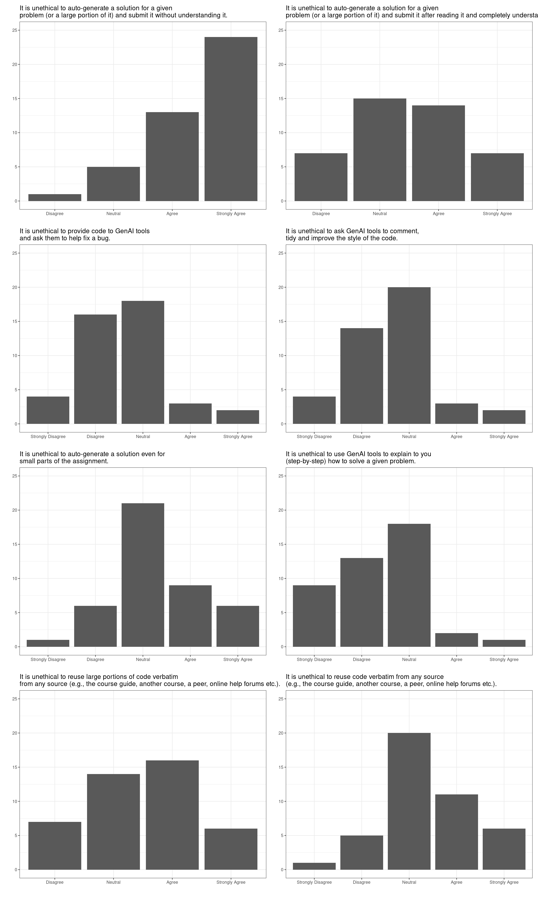
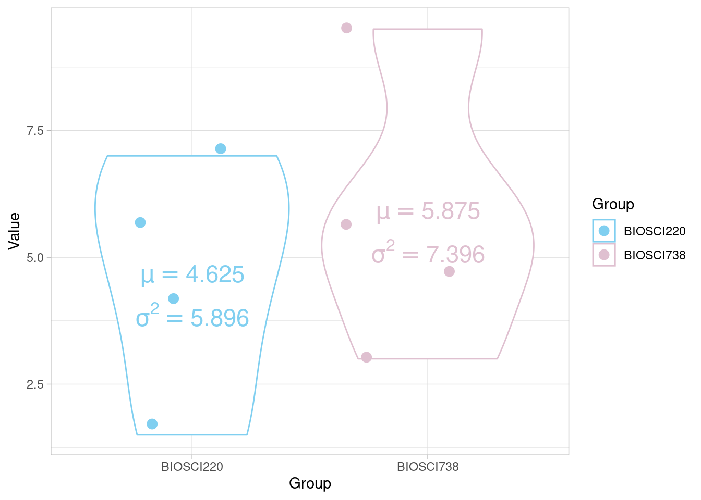
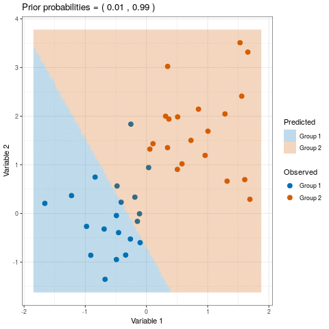

group_allocation <- function(names, seed, groups = 9 ){
set.seed(seed)
tmp <- sample(names, replace = FALSE)
split(tmp, cut(seq_along(tmp), groups, labels = paste("Group", 1:groups)))
}Notes
All BIOSCI 738 lectures require your active involvement! See the course policies for further infomation.
Throughout this runsheet you’ll find a number of different callout boxes:
this box will contain the expected learning objectives and/or outcomes for the material
this box will contain some useful information
First things first…
Note the randomly allocated group mentioned above. Each lecture I’ll have run the following R function that randomly allocates you into groups. It’s your responsibility to get into them, just look for the cows!

Accessing activities
Scan the QR code below, depending on the activity the site will update with what I want to share (e.g., this runsheet etc.)

March 10th
Rough timeline
09:05 am - 10:55 am
09:05–10.25 am Gorilla Gambit (Section 2.2)
10.25–10.55 am Group Code of Conduct (Section 2.3)
- Classwide discussion (Section 2.3.1)
- Group activity (Section 2.3.2)
09:55–10:05 am Break
10.05–10.15 am Introduction to BIOSCI 738 (Section 2.4)
10.15–10.40 am AI in the BOISCI 738 classroom (Section 2.5)
- Classwide discussion (Section 2.5.1)
- Group activity (Section 2.5.2)
10.40–10.55 am Q&A and peer-share (Section 2.6)
Randomly allocated groups
It’s your responsibility to get into these, just look for the cows!
group_allocation(names, seed = 100325)$`Group 1`
[1] "Yutao Yang" "Lana Najar" "Emma Akeroyd" "Shoule Du"
$`Group 2`
[1] "Robert Mihok" "Laura Munck" "Alex Johnson" "Sunny Chen"
$`Group 3`
[1] "Julia Thain" "Xinyue Zhang" "Zichang Li"
[4] "Barnaby Clegg-Shaw"
$`Group 4`
[1] "Pikitangarangi Ratapu" "Zhixiao Zhang"
[3] "Anqi Cheng" "Antonia Schebek-Fuerstenberg"
$`Group 5`
[1] "Congkai Meng" "Jiaxin Liu" "Yingyi Wang"
$`Group 6`
[1] "Tongzheng Yao" "Jianing Chen" "Charlotte Sutton" "YOGAPRIYA S"
$`Group 7`
[1] "Ziyi Wang" "Yutong Wang" "He Li" "Bayu Pitandoyo"
$`Group 8`
[1] "Karie Labidon" "Happy Liang" "Angel Loh" "Yue Ma"
$`Group 9`
[1] "Leyang Liu" "Keyi Sun" "Yi Han" "Shuxiang He"Gorilla Gambit
Group activity roles include
- A runner, responsible for running (or at least getting the next instruction from Charlotte)
- A coder, responsible for implementing the code for the group this does NOT mean the sole coder, rather the person responsible for running any suggested code etc.
- A timekeeper, responsible for managing time for the group, making sure you stay on track
- A facilitator, responsible for seeking out opinions from all group members and ensuring that everyone has the opportunity to contribute
In your groups quickly determine who is filling what role by order of next birthdays: the person with the next birthday will be the runner, the next birthday after that will be the coder, the third birthday will be timekeeper, and if your group has four members, the fourth member will be the facilitator.
Once you have allocated group roles your runner should come to me to retrieve the first instruction.
Group Code of Conduct
A classwide agreed group working Code of Conduct
Upon the completion of this activity I will summarise the main themes/suggestions from Section 2.3.2 (that I deem appropriate). This will become the class-agreed group working Code of Conduct that you are expected to adhere to during each activity.
Why I think this is important
As a student of University of Auckland student, you are responsible for understanding and abiding by the requirements of the Student Charter.
In this activity we’re going to be talking about my and your expectation when working in a group during this class, see this section of the course guide for further details.
A Code of Conduct is not just a strange thing the university make you sign. They are a large part of many professional and research-focused bodies beyond university. The following lists just a few examples of societies or institutes you will likely come across during a biostats career in NZ.
Write your own
In your groups head to this shared Google Doc.
Follow the instructions given around assigning group role.
Your notetaker should then navigate to your groups’ section.
As a group discuss and write down your expectations of yourself and each other during group work activities. You may want to think about
- how to ensure all members feel welcome,
- your expectations around being an active (and equal) contributor, and
- your expectations around use of technologies during activities.
Introduction to BIOSCI 738
- üì¢ Call for class rep! üì¢ First meeting 25 March, 1-2pm
- The course guide, how it works
- Assessments in BIOSCI 738
GenAI in the BIOSCI 738 classroom
Expectations of genAI use
Upon the completion of this activity I will summarise the main themes/suggestions from Section 2.5.2 (that I deem appropriate). This will become the class-agreed group working Code of Conduct that you are expected to adhere to during each activity.
Who’s heard of bullshit?
Recently, there has been considerable interest in large language models: machine learning systems which produce human-like text and dialogue. Applications of these systems have been plagued by persistent inaccuracies in their output; these are often called “AI hallucinations”. We argue that these falsehoods, and the overall activity of large language models, is better understood as bullshit in the sense explored by Frankfurt (On Bullshit, Princeton, 2005): the models are in an important way indifferent to the truth of their outputs
This is an excerpt from the abstract of Hicks, Humphries, and Slater (2024).
If a student is confused about a concept, they can sit with ChatGPT and it will talk to them for hours about that particular concept.
It is a really great tool to create code but also a really great tool to prevent yourself from learning.
It’s teachers’ responsibility to motivate them and make such a problem that [students] are keen to solve and in a way that they actually would like to learn something and realize that they need these skills also in the future.
…there have always been so many ways of cheating, but I don’t think I’ve ever been aware of such an obvious, cheap, and easy way of cheating. Students can get [an AI tool] to answer any question I can ask them at the moment and therefore I have lost my ability to confidently assess any work that students hand in.
I think we need different kinds of professionals with different understandings of computing. Some need to be very deeply involved with how our programming languages work … others might only need some kind of overall understanding. They are not programmers by themselves, but they still should understand how software is produced.
All the above are quotes garnered in Sheard et al. (2024).
Remember back to last week when I asked you to complete a pre-course quiz or two? Below are a summary of your responses to the genAI related questions. These questions were, by design, worded in the same way those in Prather et al. (2023) (see Figure 3 of that paper for a summary of their findings).
A summary of your responses

| Answer | Freq |
|---|---|
| Allowed/Disallowed | 37 |
| Always allowed | 3 |
| Always disallowed | 3 |


| Abbr | Question |
|---|---|
| A 6 | It is unethical to auto-generate a solution for a given problem (or a large portion of it) and submit it without understanding it. |
| A 7 | It is unethical to auto-generate a solution for a given problem (or a large portion of it) and submit it after reading it and completely understanding it. |
| A 8 | It is unethical to provide code to GenAI tools and ask them to help fix a bug. |
| A 9 | It is unethical to ask GenAI tools to comment, tidy and improve the style of the code. |
| A 10 | It is unethical to auto-generate a solution even for small parts of the assignment. |
| A 11 | It is unethical to use GenAI tools to explain to you (step-by-step) how to solve a given problem. |
| A 12 | It is unethical to reuse large portions of code verbatim from any source (e.g., the course guide, another course, a peer, online help forums etc.). |
| A 13 | It is unethical to reuse code verbatim from any source (e.g., the course guide, another course, a peer, online help forums etc.). |
Some specific answers I particularly liked or wanted to discuss
In my opinion, the controversy behind LLMs and other AIs is rather blown out of proportion, if people use it to do all their assignments for them it should be EASILY detectable for any marker/instructor…
I’m getting increasingly concerned by assignments at uni with the basic premise of “get chatgpt to generate this, then do [whatever is relevant for the assignment which is almost never critiquing the output]”…
I don’t enjoy the increasing prevalence and reliance on AI in academic settings and in day to day life due the large environmental impacts and blurry ethics…
GenAI’s kinda like a double-edged sword for jobs…AI’s the shortcut, but my brain’s still the GPS!
I have been using Grammarly (to my understanding, it’s also a generative AI),…
I’m worried that non-native English speakers using translation tools might be identified as AI…
Do you have anything else that you’d to mention about your experiences with GenAI tools?
Share and discuss
Again in your groups head to the shared Google Doc.
As a group discuss and write down your expectations of yourself and each other with regards to use of GenAI for classroom activities, and assignment activities. You may want to think about
- how to ensure GenAI tools are use for the benefit of everyone’s learning, or
- what your expectations are of your peers who use gen AI are.
March 14th
Rough timeline
02:05 pm - 03:55 pm
02:05–02.20 pm Activity & AI expectations (Section 3.2)
02.20–02.45 pm Data visualization (Section 3.3)
- What makes a plot? (Section 3.3.1)
- Roast my plots (Section 3.3.2)
02:45–02:55 pm Break
02.55–03.15 pm Good programming practice (Section 3.4)
- Classwide discussion (Section 3.4.1)
- Group activity (Section 3.4.2)
03.15–03.45 pm Reproducible / retracted analysis (Section 3.5)
03.45–03.55 pm Q&A and peer-share (Section 3.6)
Randomly allocated groups
It’s your responsibility to get into these, just look for the cows!
group_allocation(names, seed = 1312, 10)$`Group 1`
[1] "Jiaxin Liu" "Daneshajeya Jeyavalan" "Lana Najar"
[4] "Julia Thain"
$`Group 2`
[1] "Hnin Lwin" "He Li" "Ziyi Wang"
[4] "Francesca Domanska"
$`Group 3`
[1] "Keyi Sun" "Zichang Li" "Yutong Wang" "Alex Johnson"
$`Group 4`
[1] "Sunny Chen" "Leyang Liu" "Anqi Cheng" "Bayu Pitandoyo"
$`Group 5`
[1] "Laura Munck" "Charlotte Sutton" "Barnaby Clegg-Shaw"
[4] "Shoule Du"
$`Group 6`
[1] "Yi Han" "Yue Ma" "Robert Mihok"
$`Group 7`
[1] "Tongzheng Yao" "Pikitangarangi Ratapu" "YOGAPRIYA S"
[4] "Vivian Qian"
$`Group 8`
[1] "Zhixiao Zhang" "Yutao Yang" "Angel Loh" "Congkai Meng"
$`Group 9`
[1] "Shuxiang He" "Antonia Schebek-Fuerstenberg"
[3] "Xinyue Zhang" "Yingyi Wang"
$`Group 10`
[1] "Emma Akeroyd" "Karie Labidon" "Happy Liang" "Jianing Chen" Activity & AI expectations
A classwide agreed group working Code of Conduct
As decided by you in last lecture’s activity Section 2.3. I have updated the course guide accordingly!
Some points of note
- One thing that I think gets overlooked around the use of genAI (over and above preserving “academic integrity”) is that it’s often not the use of these tools that endangers academic integrity, more that the output generated (more often than not) does not answer the question posed.
- Whilst using genAI tools to help your writing is fine for the most part, I would be particularly careful around overusing them (particularly for more technical content like stats inference). This is as often subtle differences in sentence structure changes the statistical meaning, which can make the inference incorrect.
- Quite a few papers exist (up yo you to decide if these are reputable or not) stating that large language models have teaching and grading capabilities. This is true, however, typically these papers discuss how instructors use LLM capabilities to provide students with personalized learning opportunities. This requires expertly “training” specific models to ensure that specific learning objectives etc. are being met and given in the style specific to a particular course’s assessment. Personally, I would be very wary using genAI tools yourself to validate your learning, especially in regards to more complex material where common misconceptions infect the internet!
- IMO genAI is just as overly verbose and often complicated in terms of generating code as it is renowned for in generating writing. For example, think back to the diagnostic coding task. I saw many submissions that included this syntax
"\\d{2}$". This is correct syntax (based on what it was used for) but I’d be keen for anyone who used it to explain what it’s doing!
IMO these tools are here to stay and I do think that part of your future career will involve having to navigate working with peers/colleagues who may readily use them or choose not to. This is unavoidable and something I’d recommend starting to think about how you (they) deal with this if you’ve not already.
Data visualization
Interpret, critique and communicate using visualization!
What makes a plot?
Scan the QR code below and based on vibes alone choose your favourite until I tell you to stop
Roast my plots
Good programming practice
Abide by good programming practices to avoid future heartaches!
IMO
Following this section of the course guide let’s talk about what good programming practice looks like in this course. For a more in-depth and general discussion I recommend Wilson et al. (2017).
You should always start with a clean work space.
Honestly, I think the default RStudio behaviour of restoring .RData files etc. just makes everyone lazy…
Devise a workflow
Remember the pre-course tasks? I mentioned the following
During this course, very likely in other courses you’ll be taking this semester and in your future careers you will have to deal with many different datasets, wrangle “dirty” data and deal with data from different sources (at the very least). The key thing is to ensure that ANY ANALYSIS YOU CARRY OUT is TRANSPARENT and FULLY REPRODICIBLE (either for your peers or future you). This is where setting good foundations and devising a well-thought-out workflow is imperative!
| Answer | Freq |
|---|---|
| The tasks have been bundled into a project and I have a whole GitHub repo giving a step-by-step show-and-tell of the answers | 1 |
| WTF is a workspace | 4 |
| I kept on forgetting to read in the new data and got very frustrated when my calculations were incorrect despite doing the correct thing | 7 |
| I also have all of my othe work I have carried out in R there for safe keeping | 8 |
| My workspace is full of all the objects I created for the diagnostic tasks\ | 8 |
| I have multiple different RStudio sessions running | 11 |
| My workspace is full of all the objects I created for this diagnostic tasks but I remaned them sensibly | 11 |
| My workspace only has objects relevant to the last question I attempted | 12 |
| Each question had a fresh new session | 17 |
It’s not all about length
Lines of code written is NOT a measure of skill!
Some people thing that a writing a large number of lines of code demonstrates prowess. It does not. Surely we’ve all added nonsense to essays to “fill up” the word count!
On the over hand some people strive for carrying out operations in the fewest number of lines possible. This typically makes their work impossible to follow!
I recommend finding a spot you’re comfortable in between the following code snippets.2 Most importantly keep your style readable & consistent!
grepl("^[[:alnum:]._-]+@[[:alnum:].-]+[:alnum:]+$", c("larry@gmail.com", "larry-sally@sally.com", "larry@sally.larry.com", "test@test.com.", "charlottejones-todd"))[1] TRUE TRUE TRUE FALSE FALSEor
email_addresses <- c("larry@gmail.com", "larry-sally@sally.com", "larry@sally.larry.com", "test@test.com.", "charlottejones-todd")
contain_at <- function(x){
grep("@", x)
}
idx <- contain_at(email_addresses)
correct_email <- email_addresses[idx]
correct_email[1] "larry@gmail.com" "larry-sally@sally.com" "larry@sally.larry.com"
[4] "test@test.com." contain_notrailing <- function(x){
grep("^[:alnum:]+", x)
}
idx01 <- contain_notrailing(correct_email)
final_correct_email <- correct_email[idx01]
final_correct_email[1] "larry@gmail.com" "larry-sally@sally.com" "larry@sally.larry.com"Keep the inside thoughts inside
An
R script (or equivalent) is a roadmap to your work.
You should present the cleanest most direct route you can!
I recommend the latter approach to the second task in Section 2.2 (if you were going to pass on your solution that is). It’s not that each step shouldn’t be carried out. On the contrary, exploring your data via printing and plotting it is very important! But when you have a solution, pare down your script! no need to take everyone on your journey.
## read in data
data <- readr::read_csv("https://raw.githubusercontent.com/STATS-UOA/databunker/master/data/BMI.csv")
## printing data
print(data)
View(data) ##view opens up new window
data$bmi
## Create new data object
BMIdata <- data$bmi
BMIdata
## plot data
plot(BMIdata)
## calculate mean
mean <- mean(BMIdata)
print(mean)
## round
round(mean(BMIdata))vs
data <- readr::read_csv("https://raw.githubusercontent.com/STATS-UOA/databunker/master/data/BMI.csv")
round(mean(data$bmi))Make it EASY for me to give you marks
- Think about your audience!
- Ensure your code is reproducible!
- Do not include any irrelevant or overly verbose output; this makes it difficult to find and therefore award the relevant components!
- Keep your code tidy and your plots neat and professional. For example, it’s very useful for the reader if you use informative, readable axis labels rather than allowing the default behaviour of printing the R object name.
Your own experience
Reproducible analysis
Exploring data
Building on Section 2.2 here you’ll be carrying out some basic EDA and interpreting hypothesis tests.
In this task you’re going to be using these data collected as part of a (now retracted) study (Shu et al. (2012))3.
The data comes from a study that claims to show that people are less likely to act dishonestly when they sign an honesty pledge at the top of a form rather than at the bottom of a form. Participants received a worksheet with 20 math puzzles and were offered $1 for each puzzle they (reported to have) solved correctly within 5 minutes. After the 5 minutes passed, participants were asked to count how many puzzles they solved correctly and then throw away their worksheets. The goal was to mislead participants into thinking that the experimenter could not observe their true performance, when in fact they could because each worksheet had a unique identifier. Thus, participants could cheat (and earn more money) without fear of being caught, while the researchers could observe how much each participant had cheated. Participants then completed a “tax” form reporting how much money they had earned, and also how much time and money they spent coming to the lab. The experimenters partially compensated participants for those costs.
The paper reported very large effects. Signing at the top vs. the bottom lowered the share of people over-reporting their math puzzle performance from 79% to 37% (p = .0013), and lowered the average amount of over-reporting from 3.94 puzzles to 0.77 puzzles (p < .00001). Similarly, it nearly halved the average amount of claimed commuting expenses, from $9.62 to $5.27 (p = .0014).
Variables of interest
Cond:= 0, No signature;= 1, Signed at the top; and= 2, Signed at the bottom.CheatedOnMatrixTax:= 0, participants didn’t cheat/over-report their maths puzzle performance; and= 1, participants did cheat/over-report their maths puzzle performance.OverReport: the amount of puzzles solved participants over-reported by.SumDeduction: the amount of claimed commuting expenses $US (corrected for the true amount).
As a group:
Discuss what to the presented results indicate/claim?
Use the variables listed above and reproduce the results quoted above using the appropriate statistical analysis/test. How easy was it to replicate these results given the way the results were presented? How might you improve the way the results were presented?
There is an additional column of interest
flag; this is a binary variable that indicates if the observations were considered dodgy (i.e., fraudulent) or not. Create a visualization/carry out some analysis that could be used as evidence for/against this belief.
March 17th - Guest Lecturer Dr. Liza Bolton!
By the end of today’s seminar, you will be able to:
- Recognise that while individuals (and societies) may have different opinions and approaches to ethics, we can use codes of conduct to support our professional ethical decision making.
- Describe some of the values, principles, responsibilities, and standards from the Royal Society Te Apārangi Code of Professional Standards and Ethics in Science, Technology, and the Humanities.
- Describe how ethical decisions can appear throughout different stages of study and research in biology.
- Identify issues and provide advice for ethical decision-making in biology contexts.
Rough timeline
- 09:05–09:20 am Introduction (see Section 4.2)
- 09:20–09:55 am Your ethical experiences and codes of conduct (Section 4.2.1)
- Group discussion
- Class discussion
- Start on ethical data practices and introduction to the case studies (see slides) if time
- 09:55–10:05 am Break
- 10.05–10.20 am Ethical data practices and introduction to the case studies (see slides)
- 10.15–10.45 am Case studies (Section 4.3)
- Groups work through the case studies
- Class discussion
- 10.45–10.55 am Wrap-up (and Code of Conduct meme-off if anyone has enough time to make them)
Randomly allocated groups
It’s your responsibility to get into these, just look for the cows!
group_allocation(names, seed = 1992, groups = 10)$`Group 1`
[1] "Alex Johnson" "Charlotte Sutton" "Yi Han" "Keyi Sun"
$`Group 2`
[1] "Yutao Yang" "Tongzheng Yao" "Daneshajeya Jeyavalan"
[4] "He Li"
$`Group 3`
[1] "Bayu Pitandoyo" "Angel Loh" "Lana Najar" "Zichang Li"
$`Group 4`
[1] "Sunny Chen" "Anqi Cheng" "Happy Liang" "Karie Labidon"
$`Group 5`
[1] "Antonia Schebek-Fuerstenberg" "YOGAPRIYA S"
[3] "Hnin Lwin" "Leyang Liu"
$`Group 6`
[1] "Julia Thain" "Emma Akeroyd" "Yingyi Wang"
$`Group 7`
[1] "Jianing Chen" "Yue Ma" "Yutong Wang" "Laura Munck"
$`Group 8`
[1] "Vivian Qian" "Zhixiao Zhang" "Jiaxin Liu" "Shoule Du"
$`Group 9`
[1] "Shuxiang He" "Xinyue Zhang" "Pikitangarangi Ratapu"
[4] "Congkai Meng"
$`Group 10`
[1] "Francesca Domanska" "Robert Mihok" "Barnaby Clegg-Shaw"
[4] "Ziyi Wang" Slides
Group discussion: Codes of conduct
What experiences have you had with ethical decisions as a student and/or early career researcher and/or employee?
Read over the Royal Society Te Apārangi Code of Professional Standards and Ethics in Science, Technology, and the Humanities.
Describe a possible workflow for biological research. Come up with possible ethical decisions for each stage.
Bonus activity
If you have time (now or in the second half), do one of the following:
- Rewrite one of the values & principles of responsibility & standards using the most intense slang you can (Gen-Z, 80s valley girl, up to you, just keep it ‘family friendly’).
OR
- Make a cheesy motivational poster / ‘hopecore’ edit for one of the principles from the Royal Society Te Apārangi Code.

Case studies
For each of the following case studies, discuss the situation and identify potential ethical issues. For some, you may need to run the associated code in R.
Case 1

Image attribution: Hochstetter’s frog (Waitakere Ranges, Auckland). © Nick Harker (via https://www.reptiles.org.nz/)
A mine has been accused of managing their tailings poorly, causing dangerous chemicals to enter the nearby swamp. Local councillors, S. Hrek and D. Onkey, have complained that it is bad for the Hochstetter’s frog | Pangokereia living there. You have been hired by the mine to help them push back on these allegations.
You are contracted to measure the weight of the frogs in the area, with the idea that if the frogs are unhealthy, their weight will be lower than was found in a previous survey of the area. That previous study found that the average weight of the Hochstetter’s frogs in this location is 6.2 grams.
While you are catching and measuring the live frogs, you notice that there are not many juvenile frogs (‘froglets’) despite it being the season when many should be maturing from tadpoles into adult frogs. As Hochstetter’s frogs mature their colouring darkens and you notice that most of the frogs have quite dark colouring.
You can run the code below to find the mean weight of the frogs you studied and perform a t-test.
# The weights of 30 frogs
frog_weights <- c(5.6, 8.7, 6.1, 6.2, 5.1, 6.8, 6.8, 6.5, 7.0, 7.5, 6.3, 5.8, 6.3, 7.1, 6.9, 6.4, 8.3, 7.4, 7.6, 6.8, 7.3, 9.1, 8.1, 6.8, 6.1, 6.8, 6.9, 7.2, 7.2, 7.5)
# Calculate the average weight in this sample
mean(frog_weights)
# One sample t-test
t.test(frog_weights, mu = 6.5)
Look up R documentation
You can run ?t.test in your R console to see the documentation for the basic t-test used above.
A mine executive is very relieved by your results and interprets them as indicating that the frogs are doing very well as they are even larger and healthier than they were before.
Case 2

Image attribution: Getty images via https://www.theguardian.com/world/2020/dec/28/mankura-the-rare-white-kiwi-dies-after-surgery-in-new-zealand
You have been hired to work with a local iwi to collect data on the locations and habits of a rare white kiwi bird with a distinctive call. Data is collected across an array of microphones and is used to create a location heat map for where this kiwi spends time.
The iwi are kaitiaki (caretakers) of the area where this kiwi lives. In addition to wanting to learn more about the kiwi, they are worried about increasing attempts from tourists and others to get pictures of this rare bird when people post on social media about locations it has been seen. Lots of people looking for the kiwi and trying to touch it or take photos risks disturbing and distressing the animal, which could severely hurt its health and that of other kiwi in the area.
You finish up the work and your clients are very happy with it, especially complimentary about the data visualisation showing the common locations the kiwi visits by longitude and latitude.
You are preparing an update to your CV to apply for a job, and you notice that transperancy and open data practices are key values of the research institute you are applying to. You write a blog post for your website outlining your findings from the kiwi research, clearly explaining the data collection processes, analytical choices, and limitations. You create a public GitHub repository that provides all the code and data to create the location heat maps.
You’re about to press publish so you can link to it in your application, but a little voice in your head stops you…
Case 3

Image attribution: Te Ara https://teara.govt.nz/en/grasslands
Concerns have been raised that an off-roading adventure course has caused vegetation loss and increased the risk of wind erosion due to exposed soil. The area where the course has been developed is a large, flat tussock grassland in the South Island. The grassland is fairly similar throughout, and has not been disturbed other than the dirt track for the off-road vehicles to travel on — this track area is not included in the coverage measures, but estimates are taken next to it.
High resolution drone photography of the area has been used to estimate vegetation coverage both close to the course and further away in the undisturbed grassland. To gather the data, 100 meter lines parallel to the course, spaced every 5 meters, are drawn on the aerial imagery. Five one meter square areas are randomly chosen along each line and the vegetation coverage estimated using an appropriate machine learning tool.
# You need the library tidyverse installed to run this code
library(tidyverse)
veg_cov <- tibble(
dist_from_track = c(
0, 0, 0, 0, 0, 0, 0, 0, 0, 0, 5, 5, 5, 5, 5, 5, 5, 5, 5, 5,
10, 10, 10, 10, 10, 10, 10, 10, 10, 10, 15, 15, 15, 15, 15, 15, 15, 15, 15, 15,
20, 20, 20, 20, 20, 20, 20, 20, 20, 20, 25, 25, 25, 25, 25, 25, 25, 25, 25, 25,
30, 30, 30, 30, 30, 30, 30, 30, 30, 30, 35, 35, 35, 35, 35, 35, 35, 35, 35, 35,
40, 40, 40, 40, 40, 40, 40, 40, 40, 40, 45, 45, 45, 45, 45, 45, 45, 45, 45, 45,
50, 50, 50, 50, 50, 50, 50, 50, 50, 50, 55, 55, 55, 55, 55, 55, 55, 55, 55, 55,
60, 60, 60, 60, 60, 60, 60, 60, 60, 60, 65, 65, 65, 65, 65, 65, 65, 65, 65, 65,
70, 70, 70, 70, 70, 70, 70, 70, 70, 70, 75, 75, 75, 75, 75, 75, 75, 75, 75, 75,
80, 80, 80, 80, 80, 80, 80, 80, 80, 80, 85, 85, 85, 85, 85, 85, 85, 85, 85, 85,
90, 90, 90, 90, 90, 90, 90, 90, 90, 90, 95, 95, 95, 95, 95, 95, 95, 95, 95, 95,
100, 100, 100, 100, 100, 100, 100, 100, 100, 100
),
coverage = c(
27.9, 22.5, 27, 21.8, 29.6, 29.2, 21, 21.7, 29.9, 28.5, 26.7, 29.4, 20.6, 26.2, 21.7, 20.4, 25.3, 22.8, 25, 26.3,
20.1, 26.1, 27.8, 29.2, 22.9, 27.9, 25.7, 27.8, 27.1, 26.7, 29.3, 25.1, 27.5, 28.4, 28.7, 21.9, 22.2, 26.5, 23.4, 25.1,
26.5, 29.7, 25.1, 20.6, 21.5, 26.4, 21, 27.7, 24.1, 28.7, 27.7, 26.5, 26.3, 28.3, 21.3, 28.8, 22.4, 26.5, 22.3, 20.7,
21.3, 56.9, 33.7, 57.5, 40.4, 25.3, 52.8, 56.9, 58, 42.3, 41, 41.4, 58.7, 41.1, 41.3, 44.8, 56.9, 29.1, 57.1, 57.2,
40.9, 59.6, 22.6, 54.5, 39.2, 41.4, 36.6, 29.1, 59.3, 46.2, 43.2, 25.6, 47.9, 49.9, 58.1, 25.2, 46, 48.3, 24, 22.8,
31.2, 49.4, 58.5, 52.6, 36.7, 38.2, 34.5, 21.8, 48.8, 55.2, 75.3, 51.7, 64.7, 70.4, 55.5, 59.1, 74.5, 77.4, 76.3, 76.5,
59.7, 59.4, 74.7, 50.2, 50.5, 51.1, 51.4, 79.3, 78.8, 71.2, 73.6, 71, 59.4, 66.4, 79.2, 65.9, 60.5, 78.8, 51.7, 57.2,
67.5, 55.3, 53.8, 65.1, 70.6, 73.1, 51.2, 75.3, 70.8, 72.3, 66, 56.6, 67.3, 66.3, 73.9, 56.5, 57.5, 75.1, 68.5, 59,
76, 60.6, 69.2, 75.8, 61.8, 60.8, 62.7, 66, 65.8, 60.1, 55.8, 74.1, 60.8, 79, 53.8, 73.7, 56.2, 57.3, 77.1, 53.6,
61.9, 71.9, 71.8, 51.8, 68.7, 66.4, 65.6, 77.5, 76.1, 66.4, 58.7, 71.2, 78.1, 51.1, 64.3, 51.4, 65.3, 50.5, 50.5, 61.8, 56.3, 64.9, 50, 61.3, 64.8, 57.7, 60.8, 62.6,65.4,69))
plot <- ggplot(veg_cov, aes(x = dist_from_track, y = coverage)) +
geom_point() +
xlim(0, 25) +
ylim(0, 30) +
geom_smooth(method = "lm", formula = 'y ~ x', col="darkgreen") +
labs(x = "Distance from road (m)", y = "Coverage (%)",
title = "Vegetation coverage near to adventure course similar to surrounding area") +
theme_minimal()
suppressWarnings(print(plot))Finished early?
Work on the bonus activity.
March 21st
By the end of today’s seminar, you should be able to
- Carry out, interpret, and communicate the result of
- a randomization hypothesis test,
- a permutation test, and
- a bootstrap.
- Identify which of, and when, the above resampling procedures are appropriate to use
- Interpret p-values correctly!
Rough timeline
02:05 pm - 03:55 pm
02:05–02.25 pm Significance (Section 5.2)
02.25–02.55 pm Hypothesis testing via resampling (Section 5.3)
- Permutation (exact) tests (Section 5.3.1)
- Randomization tests (Section 5.3.2)
02:55–03:05 pm Break
03.05–03.45 pm Bootstrapping (Section 5.4)
- Case study (Section 5.4.1)
03.45–03.55 pm Q&A and peer-share (Section 5.5)
Randomly allocated groups
It’s your responsibility to get into these, just look for the cows!
group_allocation(names, seed = 1131, 10)$`Group 1`
[1] "Pikitangarangi Ratapu" "YOGAPRIYA S" "Yue Ma"
[4] "Daneshajeya Jeyavalan"
$`Group 2`
[1] "Robert Mihok" "Jianing Chen" "Vivian Qian" "Happy Liang"
$`Group 3`
[1] "Zichang Li" "Antonia Schebek-Fuerstenberg"
[3] "Anqi Cheng" "Shoule Du"
$`Group 4`
[1] "Alex Johnson" "Jiaxin Liu" "Yutao Yang"
$`Group 5`
[1] "Tongzheng Yao" "Keyi Sun" "Ziyi Wang" "Yingyi Wang"
$`Group 6`
[1] "Zhixiao Zhang" "Charlotte Sutton" "Barnaby Clegg-Shaw"
[4] "Lana Najar"
$`Group 7`
[1] "He Li" "Laura Munck" "Congkai Meng"
$`Group 8`
[1] "Hnin Lwin" "Xinyue Zhang" "Leyang Liu" "Karie Labidon"
$`Group 9`
[1] "Angel Loh" "Sunny Chen" "Emma Akeroyd"
[4] "Francesca Domanska"
$`Group 10`
[1] "Shuxiang He" "Yutong Wang" "Julia Thain" "Yi Han" Significance
How good are you at assessing significance? Test yourself.
5% is NOT some magic threshold! Below is an excerpt taken from Fisher (1926).4
If one in twenty does not seem high enough odds, we may, if we prefer it, draw the line at one in fifty (the 2 per cent. point), or one in a hundred (the 1 per cent. point). Personally, the writer prefers to set a low standard of significance at the 5 per cent. point, and ignore entirely all results which fail to reach this level. A scientific fact should be regarded as experimentally established only if a properly designed experiment rarely fails to give this level of significance. The very high odds sometimes claimed for experimental results should usually be discounted, for inaccurate methods of estimating error have far more influence than has the particular standard of significance chosen. – Page 504, Fisher (1926).
Remember back to Section 4.3 where you faced some potential ethical issues in the given case studies? These ranged from data availability to drawing & reporting conclusions. Your obligations in being an responsible (ethical) also applies to your use of language when reporting.
Hypothesis testing via resampling
require(tidyverse)
data <- data.frame(Group = rep(c("BIOSCI220", "BIOSCI738"), each = 4),
Value = c(7,6,4,1.5,5,6,9.5,3))
means <- data %>%
group_by(Group) %>%
summarise(means = round(mean(Value), 3))
vars <- data %>%
group_by(Group) %>%
summarise(vars = round(var(Value), 3))
ggplot(data, aes(x = Group, y = Value, col = Group)) + geom_violin() + geom_jitter(aes(col = Group), size = 3) +
xlab("Group") + ylab("Value") + theme_light() +
annotate(geom = "text", x = means$Group, y = means$means, label = paste("mu == ", means$means), parse = TRUE, col = c("#80CFF0", "#DFC0D0"), size = 6) +
annotate(geom = "text", x = vars$Group, y = (means$means) - 0.75, label = paste("sigma^2 == ", vars$vars), parse = TRUE, col = c("#80CFF0", "#DFC0D0"), size = 6) +
scale_color_manual(values = c("#80CFF0", "#DFC0D0"))
Q Do you think the means of each group are significantly different from each other? Why or why not?
Q Do you think the variances of each group are significantly different from each other? Why or why not?
Permutation (exact) tests
How many times can you rearrange 8 values into two groups, each of size 4? Remember \(\binom{n}{k} = \frac{n!}{k!(n-k)!}\) the binomial coefficient! In our case, \(\binom{8}{4}\). Luckily R has the function choose(8,4)!
Using a permutation test (i.e., one that considers all possible re-combinations of our data) we test the following hypothesis
NULL \(H_0: \mu_\text{BIOSCI738} = \mu_\text{BIOSCI220}\) vs alternative \(H_1: \mu_\text{BIOSCI738} \neq \mu_\text{BIOSCI220}\).
mean_diff <- means %>%
summarise(diff = diff(means)) %>%
as.numeric()
mean_diff[1] 1.25The observed statistic in our case is \(\mu_\text{BIOSCI738} - \mu_\text{BIOSCI220} =\) 1.25. Below we carry out a permutation test.
combinations <- combn(8,4) ## 70 in total
permtest_combinations <- apply(combinations, 2, function(x)
mean(data$Value[x]) - mean(data$Value[-x]))
p_val <- length(permtest_combinations[abs(permtest_combinations) >= mean_diff]) / choose(8,4)
p_val[1] 0.5714286TBH all we’ve really done is carried out a t-test without the associated assumptions, compare this to the output from t.test().
t.test(Value ~ Group, data = data)
Welch Two Sample t-test
data: Value by Group
t = -0.68573, df = 5.9245, p-value = 0.5188
alternative hypothesis: true difference in means between group BIOSCI220 and group BIOSCI738 is not equal to 0
95 percent confidence interval:
-5.72425 3.22425
sample estimates:
mean in group BIOSCI220 mean in group BIOSCI738
4.625 5.875 BUT what if it wasn’t just a vanilla stat we were interested in?
Randomization tests
A randomization test is really just a incomplete permutation test (i.e., one where we can’t be bothered to compute all possible combinations). For a randomization test we reshuffle randomly and hope that we do this enough times to construct a sampling distribution of our test statistic under the NULL hypothesis.
{kind=link}
Bootstrapping
A bootstrap is a procedure for finding the (approximate) sampling distribution of a statistic/parameter of interest from a single data sample. We assume that,
- the original sample represents the distribution of the population from which it was drawn, therefore
- resamples, taken with replacement from the original sample are representative of what we would get from drawing many samples from the population (the distribution of the statistics calculated from each resample is known as the bootstrap distribution of the statistic), so
- the bootstrap distribution of a statistic represents that statistic’s sampling distribution.
{kind=link}
Case study
Some of my 2022 pumpkin haul

library(tidyverse)
## data about the weight, height, and width of some of my homegrown 2022 pumpkins
data <- read_csv("https://raw.githubusercontent.com/STATS-UOA/databunker/master/data/pumpkins.csv")
#####################
## pairsplot
GGally::ggpairs(data)
## change to kg
data <- data %>%
mutate(weight_kg = weight_g/1000)
## Pairwise relationships between the three
## dimensions all appear approximately linear,
## with a high correlation
######################
## linear model
## Fitted model.
fit <- lm(weight_kg ~ height_mm + width_mm, data = data)
fit |>
summary()
## fitted values
fitted(fit) ## notice anything strange?
## estimated error variance
summary(fit)$sigma^2
## standard errors for the estimated coefficients
summary(fit)$coefficients[, 2]
## New pumpkins
## pumpkin 1, height_mm 150, width_mm 240
## pumpkin 2, height_mm 100, width_mm 160
new <- data.frame(height_mm = c(150, 100), width_mm = c(240, 160))
## pumpkin 1 (~) 60% bigger than pumpkin 2
data %>%
ggplot(., aes(y = height_mm , x = width_mm)) +
geom_point() + geom_smooth(method = "lm") +
geom_point(data = new, col = "red")
## point predictions
predict(fit, newdata = new)
## confidence intervals
predict(fit, newdata = new, interval = "confidence")[, 2:3]
## prediction intervals
predict(fit, newdata = new, interval = "prediction")[, 2:3]
## pumpkin 1 is 60% larger than pumpkin 2 in terms of height and width. If
## pumpkin growth is isometric, then pumpkin 1's expected weight will be 60% larger than
## pumpkin 2s (ratio 1.6). If the ratio is less than 60% (1.6), then we have negative allometric growth
## (pumpkins get less heavy , relative to the other dimensions), otherwise we have
## positive allometric growth (> 1/6) (pumpkins tend to get heavier as they grow, relative
## to the other dimensions).
## under model above what is the estimated ratio of pumpkin 1 weight (kg) to pumpkin 2 weight (kg)
mu <- predict(fit, newdata = new)
mu[1]/mu[2]
## Compute a confidence interval for this ratio using 1) a parametric and 2)a non-parametric bootstrap.
###########################################################
## Parametric (resample from assumed response distribution)
###########################################################
## seed
set.seed(1567)
## number of bootstrap iterations
nreps <- 1000
## initialize empty array to hold results
bootstrap_ratios <- numeric(nreps)
## bootstrap iterations.
for (i in 1:nreps){
## Simulating new response data assuming Normal response
data$boot <- rnorm(nrow(data), fitted(fit), summary(fit)$sigma)
## Fitting the model to the bootstrapped response
fit_boot <- lm(boot ~ height_mm + width_mm, data = data)
## Calculating the estimated expectations for new pumpkins
mu_new <- predict(fit_boot, newdata = new)
## Saving the estimated ratio from the bootstrap model fit.
bootstrap_ratios[i] <- mu_new[1]/mu_new[2]
}
hist(bootstrap_ratios)
abline(v = mu[1]/mu[2], lwd = 2, col = "red")
## CI
CI_parametric <- quantile(bootstrap_ratios, c(0.025, 0.975))
CI_parametric
## The confidence interval from the parametric bootstrap does not contain 1.6. We
## therefore have evidence in favour of positive allometric growth.
###########################################################
## Non-parametric (resample from observed data)
###########################################################
## seed
set.seed(7651)
## number of bootstrap iterations
nreps <- 1000
## initialize empty array to hold results
bootstrap_ratios <- numeric(nreps)
## bootstrap iterations.
for (i in 1:nreps){
## Bootstrap resample
boot.df <- data[sample(nrow(data), replace = TRUE), ]
## Fitting the model to the bootstrapped response
fit_boot <- lm(weight_kg ~ height_mm + width_mm, data = boot.df)
## Calculating the estimated expectations for new pumpkins
mu_new <- predict(fit_boot, newdata = new)
## Saving the estimated ratio from the bootstrap model fit.
bootstrap_ratios[i] <- mu_new[1]/mu_new[2]
}
hist(bootstrap_ratios)
abline(v = mu[1]/mu[2], lwd = 2, col = "red")
## CI
CI_non_parametric <- quantile(bootstrap_ratios, c(0.025, 0.975))
CI_non_parametric
## again, evidence in favour of positive allometric growth (i.e., pumpkins get rounder the
## bigger they get)March 24th
By the end of today’s seminar, you should be able to
- Include polynomial terms in a linear model
- Critically evaluate linear model fit
- Communicate & discuss data structure
Rough timeline
- 09:05–09:45 am Reverse engineer (Section 6.3)
- 09:45–10:55 am Break
- 09:55–10:30 am Linear model diagnostics
- Recap residual plots (Section 6.4.1)
- Fry time (Section 6.4.2)
- 10.30–10.55 am Communicating statistics (Section 6.5)
- Project paper choice (Section 6.6)
- Consulting a statistician (Section 6.7)
Randomly allocated groups
It’s your responsibility to get into these, just look for the cows!
group_allocation(names, seed = 1458, 10)$`Group 1`
[1] "Jiaxin Liu" "Yi Han" "Alex Johnson" "Xinyue Zhang"
$`Group 2`
[1] "Karie Labidon" "He Li" "Julia Thain" "Yingyi Wang"
$`Group 3`
[1] "Zichang Li" "Anqi Cheng" "Daneshajeya Jeyavalan"
[4] "Congkai Meng"
$`Group 4`
[1] "Shuxiang He" "Zhixiao Zhang"
[3] "Antonia Schebek-Fuerstenberg"
$`Group 5`
[1] "Pikitangarangi Ratapu" "Tongzheng Yao" "Robert Mihok"
[4] "Laura Munck"
$`Group 6`
[1] "YOGAPRIYA S" "Ziyi Wang" "Vivian Qian" "Leyang Liu"
$`Group 7`
[1] "Keyi Sun" "Yutong Wang" "Jianing Chen"
$`Group 8`
[1] "Yue Ma" "Shoule Du" "Sunny Chen" "Emma Akeroyd"
$`Group 9`
[1] "Barnaby Clegg-Shaw" "Angel Loh" "Charlotte Sutton"
[4] "Yutao Yang"
$`Group 10`
[1] "Happy Liang" "Francesca Domanska" "Hnin Lwin"
[4] "Lana Najar" Rough timeline
- 09:05–09:45 am Reverse engineer (Section 6.3)
- 09:45–10:55 am Break
- 09:55–10:30 am Linear model diagnostics
- Recap residual plots (Section 6.4.1)
- Fry time (Section 6.4.2)
- 10.30–10.55 am Communicating statistics (Section 6.5)
- Project paper choice (Section 6.6)
- Consulting a statistician (Section 6.7)
Randomly allocated groups
It’s your responsibility to get into these, just look for the cows!
group_allocation(names, seed = 1458, 10)$`Group 1`
[1] "Jiaxin Liu" "Yi Han" "Alex Johnson" "Xinyue Zhang"
$`Group 2`
[1] "Karie Labidon" "He Li" "Julia Thain" "Yingyi Wang"
$`Group 3`
[1] "Zichang Li" "Anqi Cheng" "Daneshajeya Jeyavalan"
[4] "Congkai Meng"
$`Group 4`
[1] "Shuxiang He" "Zhixiao Zhang"
[3] "Antonia Schebek-Fuerstenberg"
$`Group 5`
[1] "Pikitangarangi Ratapu" "Tongzheng Yao" "Robert Mihok"
[4] "Laura Munck"
$`Group 6`
[1] "YOGAPRIYA S" "Ziyi Wang" "Vivian Qian" "Leyang Liu"
$`Group 7`
[1] "Keyi Sun" "Yutong Wang" "Jianing Chen"
$`Group 8`
[1] "Yue Ma" "Shoule Du" "Sunny Chen" "Emma Akeroyd"
$`Group 9`
[1] "Barnaby Clegg-Shaw" "Angel Loh" "Charlotte Sutton"
[4] "Yutao Yang"
$`Group 10`
[1] "Happy Liang" "Francesca Domanska" "Hnin Lwin"
[4] "Lana Najar" From numbers to plots
Linear model diagnostics
Residual plots (a recap)

Otherwise known as least squares regression, by default lm() seeks to minimize the squared Euclidean distance between the observations and the fitted line.
Diagnostic cheatsheets
Fry time

Figure 1 from Abdul Hamid, Omar, and Sanny (2019)
Individually, or in a group, use lm() to model the data from Abdul Hamid, Omar, and Sanny (2019) (plotted above), these can be read into your R session as follows.
fries <- readr::read_csv("https://raw.githubusercontent.com/STATS-UOA/databunker/master/data/fries.csv")- Choose and then plot your best-fitting model. How did you decide on your “best” model?
- The function
dredgeis from theRpackageMuMIn; it is very useful for model selection.dredge()generates a model selection table of models with combinations of fixed effect terms in the given global (full) model. By defaultdredge()uses AICc as its model comparison metric. Supplying your “best” model from 1) write out the top two selected models as chosen by dredge (including the estimated coefficients). From all the considered models which would you select? Justify your answer. Note, you should use residual plots in your justification. (p.s. you may need to setna.action = na.failin yourlm()call fordregde()to work)
Communicating statistics
In our very first lecture (Section 2.4) we discussed the assessment structure of BIOSCI 738 and we saw that communication-focused activities/assessment made up 50% of the total assessments:

Data discussion
Interactive Oral Assessments (IOAs)
Don’t worry too much if you’ve not completely delved into/chosen your project data. However, the activity from above (Section 6.6) will basically be mirrored in your Interactive 01 assessment.
What is an IOA
IOAs are novel, low-stakes authentic assessments, designed to promote academic integrity and prepare students for the workplace. Communication as a key skill in the UoA’s graduate profile and is integral for students’ skill development and employability. An IOA is authentic because it is based on a real-world scenario and promotes student engagement and facilitates higher-order thinking. It also preserves academic integrity through its unscripted conversation prompts based on student responses. — Ward et al. (2024)
Role play IOA 01
Role play IOA 02
March 28th
By the end of today’s seminar, you should be able to
- Fit, draw inference from and critique polynomial regression models
Rough timeline
02:05 pm - 03:55 pm
- 02:05–02.20 pm Polynomials (Section 7.2)
- 02.20–02.45 pm Fry time revisited (Section 7.3)
- 02:45–02:55 pm Break
- 02.55–03.30 pm Revisiting Section 6.5
- 03.30–03.55 pm Q&A and Task 04 (Section 7.5)
Randomly allocated groups
It’s your responsibility to get into these, just look for the cows!
group_allocation(names, seed = 0833, 10)$`Group 1`
[1] "Leyang Liu" "Congkai Meng" "Yutao Yang" "Zichang Li"
$`Group 2`
[1] "Robert Mihok" "Emma Akeroyd"
[3] "Antonia Schebek-Fuerstenberg" "Xinyue Zhang"
$`Group 3`
[1] "He Li" "Shoule Du" "Charlotte Sutton" "Yi Han"
$`Group 4`
[1] "Anqi Cheng" "Laura Munck" "Angel Loh"
$`Group 5`
[1] "Yogapriya" "Zhixiao Zhang" "Keyi Sun"
[4] "Barnaby Clegg-Shaw"
$`Group 6`
[1] "Jianing Chen" "Tongzheng Yao" "Yutong Wang" "Happy Liang"
$`Group 7`
[1] "Karie Labidon" "Hnin Lwin" "Ziyi Wang"
$`Group 8`
[1] "Daneshajeya Jeyavalan" "Lana Najar" "Jiaxin Liu"
[4] "Vivian Qian"
$`Group 9`
[1] "Yingyi Wang" "Sunny Chen" "Pikitangarangi Ratapu"
[4] "Alex Johnson"
$`Group 10`
[1] "Julia Thain" "Francesca Domanska" "Shuxiang He"
[4] "Yue Ma" Polynomials
Head to this Google Doc…
Discuss this cheatsheet below, what do you think it is attempting to show/compare?

Polynomial regression
Individually, or as a group, revisit Section 6.4.2 alongside the suggested solution given in Section 22. Discuss and summarise each fitted model and modelling choice made. Chose and justify your choice of preferred/“best” model?
Revisiting Section 6.5
March 31st
By the end of today’s seminar, you should be able to
- Discuss the role of Sums of Squares (SS) in variance decomposition
- “Manually” calculate within, between, and total SS
- Discuss the issues associated with multiple comparison techniques and the standard adjustment techniques employed to combat the issues
Rough timeline
- 09:05–09:55 am Modeller vs Designer (Section 8.2)
- Group activity (Section 8.2.2)
- 09:55–11:05 am Break
- 11:00–11:45 am Multiple comparisons (Section 8.3)
- Class discussion
- 11.45–11.55 am Q&A and peer-share (Section 8.4)
Randomly allocated groups
It’s your responsibility to get into these, just look for the cows!
group_allocation(names, seed = 1631, 10)$`Group 1`
[1] "Congkai Meng" "Yogapriya" "He Li" "Tongzheng Yao"
$`Group 2`
[1] "Karie Labidon" "Antonia Schebek-Fuerstenberg"
[3] "Yutong Wang" "Zichang Li"
$`Group 3`
[1] "Xinyue Zhang" "Lana Najar" "Jianing Chen" "Sunny Chen"
$`Group 4`
[1] "Yue Ma" "Hnin Lwin" "Francesca Domanska"
$`Group 5`
[1] "Yi Han" "Zhixiao Zhang" "Shoule Du" "Yingyi Wang"
$`Group 6`
[1] "Emma Akeroyd" "Keyi Sun" "Happy Liang"
[4] "Daneshajeya Jeyavalan"
$`Group 7`
[1] "Pikitangarangi Ratapu" "Yutao Yang" "Leyang Liu"
$`Group 8`
[1] "Julia Thain" "Charlotte Sutton" "Anqi Cheng" "Laura Munck"
$`Group 9`
[1] "Barnaby Clegg-Shaw" "Shuxiang He" "Angel Loh"
[4] "Alex Johnson"
$`Group 10`
[1] "Jiaxin Liu" "Ziyi Wang" "Robert Mihok" "Vivian Qian" Modeller vs Designer
Partitioning Variation
Partitioning Variation some examples.
Sums of Squares activity
Bonus activity
If you have some spare time sketch a concept map or illustration about sequential Sums of Squares.
Multiple comparisons
Slides
April 4th
Remember to sign up for your Interactive 01 time slot!
By the end of today’s seminar, you should be able to
- Apply and compare standard adjustment techniques (e.g., Tukey, Bonferroni and Fisher corrections) employed in multiple testing
- Discuss and compare definitions of fixed and random effects
Rough timeline
02:05 pm - 03:55 pm
- 02:05–02.40 pm Multiple Comparisons (Section 9.2)
- Group activities
- 02.40–02.55 pm Degrees of Freedom (Section 9.3)
- 02:55–03:05 pm Break
- 03.05–03.30 pm Introducing Random Effects (Section 9.4)
- Class discussion
- Group activity
- 03.45–03.55 pm Q&A and Task 05 (Section 9.5)
Randomly allocated groups
It’s your responsibility to get into these, just look for the cows!
group_allocation(names, seed = 1001, 10)$`Group 1`
[1] "Laura Munck" "Yutao Yang" "Happy Liang" "Shoule Du"
$`Group 2`
[1] "Jiaxin Liu" "Alex Johnson" "Francesca Domanska"
[4] "Zichang Li"
$`Group 3`
[1] "Anqi Cheng" "Karie Labidon" "Keyi Sun" "Charlotte Sutton"
$`Group 4`
[1] "Robert Mihok" "Hnin Lwin" "Angel Loh"
$`Group 5`
[1] "Daneshajeya Jeyavalan" "Antonia Schebek-Fuerstenberg"
[3] "Sunny Chen" "Emma Akeroyd"
$`Group 6`
[1] "Yi Han" "Lana Najar" "Tongzheng Yao" "Julia Thain"
$`Group 7`
[1] "Ziyi Wang" "Yutong Wang" "He Li"
$`Group 8`
[1] "Yingyi Wang" "Vivian Qian" "Yue Ma" "Leyang Liu"
$`Group 9`
[1] "Jianing Chen" "Congkai Meng" "Pikitangarangi Ratapu"
[4] "Shuxiang He"
$`Group 10`
[1] "Barnaby Clegg-Shaw" "Zhixiao Zhang" "Yogapriya"
[4] "Xinyue Zhang" Multiple Comparisons
Degrees of Freedom
Slides
Introducing random effcets
Below is a list collated by Gelman (2005) (p. 20) who discuss fixed and random effects in the context of ANOVA-type analysis (Note that some use terminology we’re yet to cover!).
- Fixed effects are constant across individuals, and random effects vary. For example, in a growth study, a model with random intercepts \(\alpha_i\) and fixed slope \(\beta\) corresponds to parallel lines for different individuals \(i\), or the model \(y_{it} = \alpha_i + \beta t\). Kreft and de Leeuw [(1998), page 12] thus distinguish between fixed and random coefficients.
- Effects are fixed if they are interesting in themselves or random if there is interest in the underlying population. Searle, Casella, and McCulloch [(1992), Section 1.4] explore this distinction in depth.
- When a sample exhausts the population, the corresponding variable is fixed; when the sample is a small (i.e., negligible) part of the population, the corresponding variable is random [Green and Tukey (1960)].
- If an effect is assumed to be a realized value of a random variable, it is called a random effect” [LaMotte (1983)].
- Fixed effects are estimated using least squares (or, more generally, maximum likelihood), and random effects are estimated with shrinkage [“linear unbiased prediction” in the terminology of Robinson (1991)]. This definition is standard in the multilevel modeling literature [see, e.g., Snijders and Bosker (1999), Section 4.2] and in econometrics. In the Bayesian framework, this definition implies that fixed effects \(\beta_j^{(m)}\) are estimated conditional on \(\sigma_m = \infty\), and random effects \(\beta_j^{(m)}\) are estimated conditional on \(\sigma_m\) from the posterior distribution.
The author of Gelman (2005) moves on to the following conclusion (see p. 21).
We prefer to sidestep the overloaded terms “fixed” and “random” with a cleaner distinction by simply renaming the terms in definition 1 above. We define effects (or coefficients) in a multilevel model as constant if they are identical for all groups in a population and varying if they are allowed to differ from group to group. For example, the model \(y_{ij} = \alpha + \beta x_{ij}\) (of units \(i\) in groups \(j\)) has a constant slope and varying intercepts, and \(y_{ij} = \alpha_{j} + \beta_j x_{ij}\) has varying slopes and intercepts. In this terminology (which we would apply at any level of the hierarchy in a multilevel model), varying effects occur in batches, whether or not the effects are interesting in themselves (definition 2), and whether or not they are a sample from a larger set (definition 3). Definitions 4 and 5 do not arise for us since we estimate all batches of effects hierarchically, with the variance components \(\sigma_m\) estimated from data.
Slides
April 7th
By the end of today’s seminar, you should be able to
- Fit and critique linear mixed effects models
- Create an experimental design ‘recipe’ using
R
Rough timeline
- 09:05–09:55 am Case studies (Section 10.2)
- 09:55–11:05 am Break
- 11:00–11:45 am The Terminology of Experimental Design (Section 10.3)
- Class discussion
- Group activity
- 11.45–11.55 am Q&A and peer-share (Section 10.5)
Randomly allocated groups
It’s your responsibility to get into these, just look for the cows!
group_allocation(names, seed = 1121, 10)$`Group 1`
[1] "Emma Akeroyd" "He Li" "Yingyi Wang" "Robert Mihok"
$`Group 2`
[1] "Yutao Yang" "Tongzheng Yao" "Karie Labidon" "Hnin Lwin"
$`Group 3`
[1] "Antonia Schebek-Fuerstenberg" "Pikitangarangi Ratapu"
[3] "Xinyue Zhang" "Charlotte Sutton"
$`Group 4`
[1] "Ziyi Wang" "Yue Ma" "Alex Johnson"
$`Group 5`
[1] "Happy Liang" "Shoule Du" "Leyang Liu" "Jiaxin Liu"
$`Group 6`
[1] "Congkai Meng" "Barnaby Clegg-Shaw" "Shuxiang He"
[4] "Vivian Qian"
$`Group 7`
[1] "Yi Han" "Francesca Domanska" "Yogapriya"
$`Group 8`
[1] "Laura Munck" "Keyi Sun" "Anqi Cheng" "Yutong Wang"
$`Group 9`
[1] "Daneshajeya Jeyavalan" "Julia Thain" "Jianing Chen"
[4] "Lana Najar"
$`Group 10`
[1] "Zichang Li" "Angel Loh" "Zhixiao Zhang" "Sunny Chen" Case studies
Case study 01
Revisiting Section 8.3 and Section 9.2 may be useful here.
library(tidyverse)
library(predictmeans) ## install using install.packages("predictmeans")
rats <- read_csv("https://raw.githubusercontent.com/STATS-UOA/databunker/master/data/crd_rats_data.csv")
rats <- rats %>%
mutate(Surgery = as.factor(Surgery))
## CRD analysis
rats_lm <- lm(logAUC ~ Surgery, data = rats)
## Prompt 1: interpret the output from summary(rats_lm)$coef
summary(rats_lm)$coef
## Prompt 2: interpret the output from anova(rats_lm)
anova(rats_lm)
## Prompt 3, 4, and 5
## what do the specified arguments to predictmeans() do? (HINT: use R help)
## what are the elements returned in the object pm?
## specify plot = TRUE in the predictmeans() call, how would you interpret the resulting plot?
pm <- predictmeans::predictmeans(rats_lm , modelterm = "Surgery",
pairwise = TRUE, plot = FALSE)
pm ## a lot of output
## Prompt 6: what are the three lines of code doing after this prompt?
url <- "https://gist.github.com/cmjt/72f3941533a6bdad0701928cc2924b90"
devtools::source_gist(url, quiet = TRUE) ## install using install.packages("devtools")
comparisons(pm)
## Prompt 7: explain each element of the calculations going into creating the object HSD
HSD <- (qtukey(p = 1 - 0.05, nmeans = 3, df = 12 - 3)/sqrt(2))*sqrt(2 * anova(rats_lm)[2,3] / 4)
TukeyHSD(aov(logAUC ~ Surgery, data = rats))
## Prompt 8: Use all the relevant pieces of the script (hint what is the alpha.adj object below?) to calculate the pairwise comparison between Surgery C and S, using Fisher’s, Bonferonni’s, and Tukey’s correction methods respectively. You should state the difference, and 95% CI in each case. What do you notice about these three intervals? How are they similar/dissimilar? Show your workings.
alpha.adj <- 0.05/choose(3,2)
## Prompt 9: Produce a plot that compares the three methods aboveCase study 02
Revisiting Section 8.2 may be useful here.
library(tidyverse)
data <- readr::read_csv("https://raw.githubusercontent.com/STATS-UOA/databunker/master/data/factorial_expt.csv")
## below we change the treatments to factors, simply because later on if we
## use predictmeans it will have a tantrum if this isn't the case
data <- data %>%
mutate(Disease = as.factor(Disease)) %>%
mutate(Organ = as.factor(Organ))
## Prompt 1: what model has been fitted here and what does the output from the anova() call indicate?
model <- lm(logAUC ~ Disease*Organ, data = data)
anova(model)
## Prompt 2: what model has been fitted here and what does the output from the anova() call indicate?
model_2 <- lm(logAUC ~ Organ*Disease, data = data)
anova(model_2)
#####################################
##****making the data unbalanced***
data_sub <- data[-c(1:3, 10),]
#####################################
## Prompt 3: what model has been fitted here and what does the output from the anova() call indicate?
mod <- lm(logAUC ~ Disease*Organ, data = data_sub)
anova(mod)
## Prompt 4: what model has been fitted here and what does the output from the anova() call indicate?
mod_2 <- lm(logAUC ~ Organ*Disease, data = data_sub)
anova(mod_2)
## Prompt 5: run and interpret the output from the following code, what do you conclude?
pm <- predictmeans::predictmeans(model = mod ,modelterm = "Disease:Organ",
pairwise = TRUE)Case study 03
Revisiting Section 9.4 and Section 8.2.2 may be useful here as well as this section of the course guide.
require(tidyverse)
require(lme4)
require(predictmeans)
rcbd <- read_csv("https://raw.githubusercontent.com/STATS-UOA/databunker/master/data/rcbd.csv")
## turn appropriate variables into factors
rcbd <- rcbd %>%
mutate(Run = as.factor(Run)) %>%
mutate(Surgery = as.factor(Surgery))
## run as a fixed effect
lm(logAUC8 ~ Run + Surgery, data = rcbd) |> summary()
## run as a random effect, what's the difference?
lmm <- lme4::lmer(logAUC8 ~ Surgery + (1|Run), data = rcbd)
summary(lmm)
## diagnostics estimated variance partitioning and more...
## these are really useful utility functions!
predictmeans::residplot(lmm)
predictmeans::R2_glmm(lmm)
predictmeans::se_ranef(lmm)
predictmeans::varcomp(lmm)
predictmeans::permmodels(lmm) ## remember permutation tests, what are we using them for here? Compare to a summary() outputCase study 04
Now, we’re going to get a little more advanced and model some data from Bliss-Moreau and Baxter (2019) (data retrieved from Bliss-Moreau and Baxter (2020)). To do so we’re following along (somewhat) with the steps summarised in Dan (2022). Revisiting Section 9.4 may, again, be useful here.
## wrangle as per Dan's blog
require(tidyverse)
data <- read_csv("https://raw.githubusercontent.com/STATS-UOA/databunker/master/data/monkey.csv")
data %>%
ggplot(., aes(x = age, y = Activity)) +
geom_point()
## Number of active intervals in the first two minutes (0-8)
activity_2mins <- data |>
filter(obs<9) |> group_by(subj_id, Day) |>
summarize(total=sum(Activity),
active_bins = sum(Activity > 0),
age = min(age)) |>
rename(monkey = subj_id, day = Day) |>
ungroup()
length(table(activity_2mins$monkey))
activity_2mins %>%
ggplot(., aes(x = age, y = total, col = as.factor(monkey))) +
facet_wrap(~day) +
geom_point() + theme(legend.position = "none")
## Linear model...
fit_lm <- lm(active_bins ~ age*factor(day) + factor(monkey), data = activity_2mins)
fit_lm |>
summary()
## ignore monkeys
fit_lm_pool <- lm(active_bins ~ age*factor(day), data = activity_2mins)
fit_lm_pool |>
summary()
fit_lm_pool |> gglm::gglm() ## and what do we think here?
## plot
plot(fit_lm_pool$fitted, fit_lm_pool$residuals)
## why scale?
age_centre <- mean(activity_2mins$age)
age_scale <- diff(range(activity_2mins$age))/2
active_bins_centre <- 4
activity_2mins_scaled <- activity_2mins |>
mutate(monkey = factor(monkey),
day = factor(day),
age_centred = (age - age_centre)/age_scale,
active_bins_scaled = (active_bins - active_bins_centre)/4)
glimpse(activity_2mins_scaled)
## Monkey as a random effect, why? Is this sensible?
aov(active_bins_scaled ~ age_centred*day + Error(monkey), data = activity_2mins_scaled) |>
summary()
## formula
formula <- active_bins_scaled ~ age_centred*day + (1 | monkey)
## lme4
library(lme4)
fit_lme4 <- lme4::lmer(formula, activity_2mins_scaled)
fit_lme4 |>
summary()
predictmeans::predictmeans(fit_lme4, "day")
## lmerTest, is this the same model as above
library(lmerTest)
fit_lmerTest <- lmerTest::lmer(formula, activity_2mins_scaled)
fit_lmerTest |>
summary()
predictmeans::predictmeans(fit_lmerTest, "day")
## glmmTMB, is this the same model as above
library(glmmTMB)
fit_glmmtmb <- glmmTMB::glmmTMB(formula, activity_2mins_scaled)
fit_glmmtmb |> summary()
## and what does this show?
emmeans::emmeans(fit_glmmtmb, specs = "day") |>
plot(pairwise = TRUE)The Terminology of Experimental Design
The Grammar of Experimental Designs6
This section briefly summaries the terms and concepts discussed in this section of the course guide and Emi Tanaka’s edibble ebook. Refer tho these sources for more details definitions.
flowchart TB A[Define Objectives] --> B(Design Experiment) B --> C[Procedures for Collecting Data] B --> D[Model for Analysis of Data] C --> D D --> C C --> E[Analysis of Data \n Interpretation of Results] D --> E E --> F(Conclusions)
Experimental design FAQs
Why are specific objectives important? Defining specific objectives direct you towards writing focused statements about the investigative questions you want your experiment to answer. The objective(s) are what it is you are aiming to accomplish in the experiment. The objective(s) should be written in terms of a specific verb that describes what you are doing (e.g., what you are hoping to measure/analyze/determine/test etc.).
What is the response variable? The response (or dependent) variable is the focus of your experiment; it is the variable that you will measure to accomplish your objective. It should be meaningful (i.e., represent the objective) and measurable.
What is an experimental factor? An experimental factor refers to a variable whose values that will be varied in the experiment with the goal of understanding how changes in the factor’s values explain difference in the responses in the measured variables.
Why list the experimental factors? Listing the experimental factors (or treatments or independent variables) you will study in your experiment helps to organise variables and work out how they may help to explain observed changes in your measurable response(s). It is important that the experimental factor can be controlled during and between experimental runs. Variables that are thought to affect the response, but cannot be controlled8, cannot be included as an experimental factor.
What is the experimental material? Experimental material (or units) is the material upon which something will be changed. To identify this you should answer the following questions. 1) Who or what are the subjects of your experiment? 2) How will you apply the experimental treatments to them? and 3) How will they be managed for taking measurements on them?
Is a ‘shared environment’ an issue? In some experiments, while the treatments are independently applied to subjects, subsets of subjects from the same treatment group share the same environment (e.g., are housed together). Since these subjects share environmental conditions, the measurements made on them cannot be considered to be independent of one another9
Out of lecture activity!
Read and critique this blog! Pseudoreplication: choose your data wisely
Using R to design an experiment
April 11th
By the end of today’s seminar, you should be able to
- Discuss, describe & critique different probability distributions
- Appropriately map a random variable to a (likely) distribution
Rough timeline
02:05 pm - 03:55 pm
- 02:05–02.55 pm Distributions (Section 11.2)
- 02:55–03:05 pm Break
- 03:05–03:20 pm Introduction to GLMs (Section 11.3)
- 03.20–03.55 pm Recap (Section 11.4)
Randomly allocated groups
It’s your responsibility to get into these, just look for the cows!
group_allocation(names, seed = 1317, 9)$`Group 1`
[1] "Yutao Yang" "Yue Ma" "Hnin Lwin" "Robert Mihok" "Vivian Qian"
$`Group 2`
[1] "Yingyi Wang" "Pikitangarangi Ratapu" "Jianing Chen"
[4] "Angel Loh"
$`Group 3`
[1] "Shoule Du" "Charlotte Sutton" "Yogapriya" "Sunny Chen"
$`Group 4`
[1] "Leyang Liu" "Anqi Cheng" "Daneshajeya Jeyavalan"
[4] "Barnaby Clegg-Shaw"
$`Group 5`
[1] "Shuxiang He" "Francesca Domanska" "Ziyi Wang"
[4] "Karie Labidon"
$`Group 6`
[1] "Keyi Sun" "Tongzheng Yao" "He Li" "Zichang Li"
$`Group 7`
[1] "Alex Johnson" "Antonia Schebek-Fuerstenberg"
[3] "Jiaxin Liu" "Xinyue Zhang"
$`Group 8`
[1] "Laura Munck" "Zhixiao Zhang" "Julia Thain" "Emma Akeroyd"
$`Group 9`
[1] "Happy Liang" "Congkai Meng" "Yutong Wang" "Lana Najar" "Yi Han" Distributions
{kind=link}
Bonus activity
I have 11 chickens. Here is a nice picture hanging out in an area between their coop and the feeder.

Because I love stats (and chickens) I’m interested in modelling the number of chickens visible in this particular area at different times of the day. What distribution should I use?
Introduction to Generalised Linear Models (GLMs)
Slides
Recap
April 28th
By the end of today’s seminar, you should be able to
- Write out GLMMs
- Assess GLMM fit
Rough timeline
- 09:05–09:30 am Guess the distribution (Section 12.2)
- 09:30–09:55 am Writing out (G)LM(m)s (Section 12.3)
- 09:55–11:05 am Break
- 11:00–11:45 am Assessing model fit (Section 12.4)
- Class discussion
- Group activities
- 11.45–11.55 am Q&A and peer-share (Section 12.5)
Guess the distribution
Recall the chooks from Section 11.2? Now, let’s play a game.
SCAN ME or head to dub.sh/biosci738
When prompted Quick Write the distribution
- Dominic Toretto counts how many cars pass by on a highway every 10 minutes while scouting for races.
- Squid Game contestants roll a die repeatedly, aiming to get a 6 to progress to the next level.
- Charlie Bucket opens chocolate bars randomly to find golden tickets hidden among them.
- Dr. Owens from Stranger Things tests a portal detection device 10 times on known rift locations.
- The Bachelor contestants have their heights recorded to design custom suits.
- Moana measures the time intervals between large waves hitting a reef to plan canoe launches.
- Geralt of Rivia wants to understand how long his battle potions last under different combat conditions.
- Buzz Lightyear needs to estimate the total number of Buzz Lightyear toys manufactured, to do so he uses the serial numbers on a few toys he finds.
[NOTE: Scenarios were created with the assistance of ChatGPT (OpenAI, 2025).]
Writing out (G)LM(m)s
Linear Models (LMs)
Using the the well modelled course guide rats as an example!
R code
base_url <- "https://raw.githubusercontent.com/STATS-UOA/databunker/master/data/"
rats <- readr::read_csv(paste(base_url, "crd_rats_data.csv", sep = ""))
rats$Surgery <- as.factor(rats$Surgery)
rats_lm <- lm(logAUC ~ Surgery, data = rats)
summary(rats_lm)$coef Estimate Std. Error t value Pr(>|t|)
(Intercept) 8.4600 0.4102531 20.6214144 6.930903e-09
SurgeryP 0.4900 0.5801856 0.8445574 4.202408e-01
SurgeryS 3.0875 0.5801856 5.3215734 4.799872e-04Writing out the fitted model
\[ \begin{aligned} \operatorname{\widehat{logAUC}} &= 8.46 + 0.49(\operatorname{Surgery}_{\operatorname{P}}) + 3.09(\operatorname{Surgery}_{\operatorname{S}}) \end{aligned} \]
Linear Mixed Models (LMMs)
Again, using the the well modelled course guide rats as an example!
R code
rcbd <- readr::read_csv(paste(base_url, "rcbd.csv", sep = ""))
rcbd$Run <- as.factor(rcbd$Run); rcbd$Surgery = as.factor(rcbd$Surgery)
lmer4_mod <- lme4::lmer(logAUC8 ~ Surgery + (1|Run), data = rcbd)
## fixed effect coefficients
summary(lmer4_mod)$coef Estimate Std. Error t value
(Intercept) 7.580 0.8552404 8.863005
SurgeryP 1.975 0.8505913 2.321914
SurgeryS 3.850 0.8505913 4.526263## random effect standard deviation
summary(lmer4_mod)$varcor Groups Name Std.Dev.
Run (Intercept) 1.2160
Residual 1.2029 Writing out the fitted model
\[ \begin{aligned} \operatorname{\widehat{logAUC8}}_{i} &\sim N \left(7.58_{\alpha_{j[i]}} + 1.97_{\beta_{1}}(\operatorname{Surgery}_{\operatorname{P}}) + 3.85_{\beta_{2}}(\operatorname{Surgery}_{\operatorname{S}}), \sigma^2 \right) \\ \alpha_{j} &\sim N \left(0, 1.22 \right) \text{, for Run j = 1,} \dots \text{,J} \end{aligned} \]
Generalised Linear Models (GLMs)
Now using the course guide mice as an example!
R code
require(tidyverse)
mice <- readr::read_csv(paste(base_url, "autism.csv", sep = ""))
mice <- mice %>%
separate(., col = Treatment, into = c("Diagnosis", "Sex"))Additive model
glm_mod_add <- glm(MB_buried ~ Sex + Diagnosis , data = mice, family = poisson(link = "log"))
summary(glm_mod_add)$coef Estimate Std. Error z value Pr(>|z|)
(Intercept) 2.2383670 0.03812209 58.715751 0.000000e+00
SexMale -0.1478114 0.05101554 -2.897380 3.762939e-03
DiagnosisNT -0.4090481 0.05464912 -7.484989 7.155331e-14Interaction model
glm_mod_int <- glm(MB_buried ~ Sex * Diagnosis , data = mice, family = poisson(link = "log"))
summary(glm_mod_int)$coef Estimate Std. Error z value Pr(>|z|)
(Intercept) 2.17943051 0.04237136 51.4364071 0.0000000000
SexMale -0.01928335 0.06150938 -0.3135027 0.7538987994
DiagnosisNT -0.22286307 0.07299932 -3.0529473 0.0022660570
SexMale:DiagnosisNT -0.40640850 0.11011204 -3.6908635 0.0002234941Writing out the fitted model
Additive model
\[ \begin{aligned} \log ({ \widehat{E( \operatorname{MB_buried} )} }) &= 2.24 - 0.15(\operatorname{Sex}_{\operatorname{Male}}) - 0.41(\operatorname{Diagnosis}_{\operatorname{NT}}) \end{aligned} \]
Interaction model
\[ \begin{aligned} \log ({ \widehat{E( \operatorname{MB_buried} )} }) &= 2.18 - 0.02(\operatorname{Sex}_{\operatorname{Male}}) - 0.22(\operatorname{Diagnosis}_{\operatorname{NT}})\ - \\ &\quad 0.41(\operatorname{Sex}_{\operatorname{Male}} \times \operatorname{Diagnosis}_{\operatorname{NT}}) \end{aligned} \]
Generalised Linear Mixed Models (GLMMs)
Again, using the course guide mice as an example!
R code
glmer4_mod <- lme4::glmer(MB_buried ~ Sex * Diagnosis + (1|Donor), data = mice, family = poisson(link = "log"))
## fixed effect coefficients
summary(glmer4_mod)$coef Estimate Std. Error z value Pr(>|z|)
(Intercept) 2.1712351 0.07128425 30.4588336 9.150829e-204
SexMale -0.0396138 0.06202255 -0.6386999 5.230182e-01
DiagnosisNT -0.1774183 0.11815966 -1.5015134 1.332228e-01
SexMale:DiagnosisNT -0.3944359 0.11116199 -3.5482984 3.877286e-04## random effect standard deviation
summary(glmer4_mod)$varcor Groups Name Std.Dev.
Donor (Intercept) 0.12476 ## Same model using glmmTMB
glmmTMB_mod <- glmmTMB::glmmTMB(MB_buried ~ Sex * Diagnosis + (1|Donor), data = mice, family = poisson(link = "log"))
summary(glmmTMB_mod) Family: poisson ( log )
Formula: MB_buried ~ Sex * Diagnosis + (1 | Donor)
Data: mice
AIC BIC logLik deviance df.resid
1333.0 1349.6 -661.5 1323.0 201
Random effects:
Conditional model:
Groups Name Variance Std.Dev.
Donor (Intercept) 0.01556 0.1248
Number of obs: 206, groups: Donor, 8
Conditional model:
Estimate Std. Error z value Pr(>|z|)
(Intercept) 2.17123 0.07130 30.451 < 2e-16 ***
SexMale -0.03962 0.06206 -0.638 0.523257
DiagnosisNT -0.17742 0.11820 -1.501 0.133351
SexMale:DiagnosisNT -0.39443 0.11124 -3.546 0.000392 ***
---
Signif. codes: 0 '***' 0.001 '**' 0.01 '*' 0.05 '.' 0.1 ' ' 1Writing out the fitted model
\[ \begin{aligned} \operatorname{\widehat{MB\_buried}}_{i} &\sim \operatorname{Poisson}(\lambda_i) \\ \log(\lambda_i) &=2.17_{\alpha_{j[i]}} - 0.04_{\beta_{1}}(\operatorname{Sex}_{\operatorname{Male}}) \\ \alpha_{j} &\sim N \left(-0.18_{\gamma_{1}^{\alpha}}(\operatorname{Diagnosis}_{\operatorname{NT}}) - 0.39_{\gamma_{2}^{\alpha}}(\operatorname{Diagnosis}_{\operatorname{NT}} \times \operatorname{Sex}_{\operatorname{Male}}), 0.12 \right) \text{, for Donor j = 1,} \dots \text{,J} \end{aligned} \]
Assessing model fit
Slides
Case studies
We’ll work through this example together! Note that this aligns with the content in this section of the courseguide; however, here we go beyond what is covered there!
Bat Abundance (subset of data from Barlow et al. (2015))
library(tidyverse)
bats <- read_delim("https://raw.githubusercontent.com/STATS-UOA/databunker/master/data/bats.csv")
## Plot
ggplot(bats, aes(x = TotalCount, fill = SpeciesID)) + geom_histogram(alpha = 0.4, position = "identity")
## summarise
bats %>%
group_by(SpeciesID) %>%
summarise(mean_roosts = mean(TotalCount))
## question, difference between number of roosts for each species?
## So let's fit a Linear Model
mod <- lm(TotalCount ~ SpeciesID, data = bats)
mod |> summary()
## Distribution of residuals
hist(residuals(mod), xlab = "Model residuals")
abline(v = 0, lwd = 4, lty = 2)
## Other residual plots
gglm::gglm(mod)
## Poisson model
gmod <- glm(TotalCount ~ SpeciesID, data = bats, family = "poisson")
gmod |> summary()
## quantile residual Q-Q plot
quantile_residuals <- statmod::qresiduals(gmod)
qqnorm(!is.infinite(quantile_residuals))
abline(0,1)
## Pearson residuals, recall that under a poisson model the variance increases with
## the mean, so the raw resids should have a spread that increases with fitted vals
## but a Pearson's residual are resids/sqrt(var) so if model is "correct"
## then the Peasron residuals should have constant spread...
resids_pearson <- residuals(gmod, type = "pearson")
resids <- data.frame(Fitted = gmod$fitted.values,
"Pearson_residuals" = resids_pearson)
ggplot(resids, aes(x = Fitted, y = Pearson_residuals)) +
geom_point() + geom_hline(yintercept = 0) + theme_linedraw() + ylab("Pearson residuals")
## Deviance
D <- gmod$deviance
D
## extract the residual degrees of freedom (n-k)
df <- gmod$df.residual
df
1 - pchisq(D, df)
## but are the chi-squared assumptions met?
## dispersion plot (by simulation!!)
## dispersion = residual deviance / degrees of freedom
## expected value is 1, when larger than 1 Neg binomial more appropriate
observed_dispersion <- gmod$deviance/df
nreps <- 1000
dispersion <- numeric(nreps)
for(i in 1:nreps){
## gererate nobvs poisson rvs using fitted mean
tmp <- rpois(nrow(bats), lambda = fitted(gmod))
tmp_mod <- glm(tmp ~ bats$SpeciesID, family = "poisson")
df_tmp <- tmp_mod$df.residual
dispersion[i] <- tmp_mod$deviance/df_tmp
}
ggplot(data.frame(dispersion = dispersion), aes(x = dispersion)) +
geom_histogram()
## dispersion plot (by simulation)
## from the DHARMa package
simulation <- DHARMa::simulateResiduals(fittedModel = gmod, n = nreps, refit = TRUE)
DHARMa::testDispersion(simulation)
####################
## negative binomial
nbmod <- MASS::glm.nb(TotalCount ~ SpeciesID, data = bats)
nbmod |> summary()
## slopes not very different from the Poisson model
## quantile residual Q-Q plot
quantile_residuals <- statmod::qresiduals(nbmod)
qqnorm(quantile_residuals)
abline(0,1) ## PHEW
## dispersion plot (by simulation)
## from the DHARMa package
simulation <- DHARMa::simulateResiduals(fittedModel = nbmod, n = nreps, refit = TRUE)
DHARMa::testDispersion(simulation)Lobster Survival (data from Wilkinson et al. (2015))
Before working through the code below recap this section of the course guide.
library(tidyverse)
data <- read_csv("https://raw.githubusercontent.com/STATS-UOA/databunker/master/data/lobster.csv")
#############
## Model 1 ##
#############
glm_mod_bern <- glm(survived ~ size, family = "binomial", data = data)
summary(glm_mod_bern)
qresids <- statmod::qresiduals(glm_mod_bern)
qqnorm(qresids)
abline(0, 1)
ggplot(data, aes(x = size, y = survived)) +
geom_point(alpha = .5) +
stat_smooth(method="glm", se = FALSE, method.args = list(family=binomial), col = "#782c26") +
xlab("Carapace length (mm)") +
ylab("Juvenile lobster survival") + ggtitle("Fitted logistic regression model") +
theme_classic()
## Deviance
D <- glm_mod_bern$deviance
D
## extract the residual degrees of freedom (n-k)
df <- glm_mod_bern$df.residual
df
1 - pchisq(D, df)
### BUT are my Chi squared assumptions met?
#############
## Model 2 ##
#############
grouped <- data %>%
group_by(size) %>%
summarise(y = sum(survived), n = length(survived), p = mean(survived))
grouped
grouped %>%
ggplot(., aes(x = size, y = p)) +
geom_point() + xlab("Carapace length (mm)") +
ylab("Proportion survived") + ggtitle("Survival rates of juvenile lobsters") +
theme_classic()
glm_mod_binom <- glm(cbind(y, n - y) ~ size, family = "binomial", data = grouped)
summary(glm_mod_binom)
ggplot(grouped, aes(x = size, y = p)) +
geom_point(alpha = .5) +
stat_smooth(method = "glm", se = FALSE,
method.args = list(family=binomial),
col = "#782c26") +
xlab("Carapace length (mm)") +
ylab("Proportion survived") + ggtitle("Fitted logistic regression model") +
theme_classic()
## Deviance
D <- glm_mod_binom$deviance
D
## extract the residual degrees of freedom (n-k)
df <- glm_mod_binom$df.residual
df
1 - pchisq(D, df)Bird Abundance (data from García-Navas et al. (2022))
We investigated taxonomic and functional beta diversity of bird communities inhabiting Mediterranean olive groves subject to either intensive or low-intensity management of the ground cover and located in landscapes with different degrees of complexity.
require(tidyverse)
require(glmmTMB)
url <- "https://raw.githubusercontent.com/STATS-UOA/databunker/master/data/bird_abundance.csv"
birds <- read_delim(url) %>%
pivot_longer(., c(-OliveFarm, -Management, -Complexity), names_to = "Species", values_to = "Count")
## subset for simplicity
birds <- subset(birds, birds$Species %in% c("Anthus_pratensis", "Corvus_corax", "Passer_montanus"))
#############
## Model 1 ##
#############
mod <- lm(Count ~ Species, data = birds)
mod |> summary()
## Residual plots
gglm::gglm(mod)
#############
## Model 2 ##
#############
mod <- glm(Count ~ Species, data = birds, family = "poisson")
mod |> summary()
## Pearson's residuls
resids_pearson <- residuals(mod, type = "pearson")
resids <- data.frame(Fitted = mod$fitted.values,
"Pearson_residuals" = resids_pearson)
ggplot(resids, aes(x = Fitted, y = Pearson_residuals)) +
geom_point() + geom_hline(yintercept = 0) + theme_linedraw() +
ylab("Pearson residuals")
## quantile residual Q-Q plot
quantile_residuals <- statmod::qresiduals(mod)
qqnorm(!is.infinite(quantile_residuals))
## Deviance
D <- mod$deviance
df <- mod$df.residual
1 - pchisq(D, df)
## dispersion plot (by simulation)
## from the DHARMa package
simulation <- DHARMa::simulateResiduals(fittedModel = mod, n = 1000, refit = TRUE)
DHARMa::testDispersion(simulation)
#############
## Model 3 ##
#############
mod <- glmmTMB(Count ~ Species + Management + Complexity + (1|OliveFarm), data = birds,
family = "poisson")
mod |> summary()
## % variation explained
predictmeans::R2_glmm(mod)
## deviance ...
D <- summary(mod)[["AICtab"]][4] |> as.numeric()
df <- summary(mod)[["AICtab"]][5] |> as.numeric()
1 - pchisq(D, df)
## dispersion plot (by simulation)
## from the DHARMa package
simulation <- DHARMa::simulateResiduals(fittedModel = mod, n = 1000)
DHARMa::testDispersion(simulation)
#############
## Model 4 ##
#############
mod <- glmmTMB(Count ~ Species + Management + (1|OliveFarm/Complexity) , data = birds,
family = "poisson")
mod |> summary()
## % variation explained
predictmeans::R2_glmm(mod)
## dispersion plot (by simulation)
## from the DHARMa package
simulation <- DHARMa::simulateResiduals(fittedModel = mod, n = 1000)
DHARMa::testDispersion(simulation)
#############
## Model 5 ##
#############
mod <- glmmTMB(Count ~ Species + Management + (1|OliveFarm) , data = birds,
family = "nbinom2")
mod |> summary()
## % variation explained
predictmeans::R2_glmm(mod)
## dispersion plot (by simulation)
## from the DHARMa package
simulation <- DHARMa::simulateResiduals(fittedModel = mod, n = 1000)
DHARMa::testDispersion(simulation)Q&A and peer-share
VOTE: R or ME
May 2nd
Rough timeline
02:05 pm - 03:55 pm
- 02:05–02.50 pm Recap (Section 13.2)
- 02:50–03:00 pm Break
- 03:00–03:55 pm Introduction to MLE (Section 13.3)
- Class discussion
- Group activity
Recap
Maximum Likelihood Estimation (MLE)
{kind=link}
{kind=link}
Slides
Case studies
We’ll work through this example together! Note that this aligns with the content in this section of the courseguide.
require(tidyverse)
require(patchwork)
#############
## Binomial #
#############
likelihood <- function(theta) dbinom(x = 79, size = 159, prob = theta)
optimise(likelihood, c(0,1), maximum = TRUE)
log_likelihood <- function(theta) dbinom(x = 79, size = 159, prob = theta, log = TRUE)
optimise(log_likelihood, c(0,1), maximum = TRUE)
#############
## Poisson ##
#############
likelihood <- function(lambda) dpois(x = 54, lambda)
optimise(likelihood, c(0,100), maximum = TRUE)
log_likelihood <- function(lambda) dpois(x = 54, lambda, log = TRUE)
optimise(log_likelihood, c(0,100), maximum = TRUE)
################################
## plots for Poisson example ###
################################
lam <- seq(0, 100, length.out = 500)
p1 <- data.frame(lam = lam, likelihood = dpois(x = 54, lam)) %>%
ggplot() +
geom_line(aes(x = lam, y = likelihood)) +
theme_linedraw() + xlab(expression(lambda)) +
ylab(expression(paste("L(", ~lambda, ";s)", sep = " "))) +
geom_vline(xintercept = 54, col = "#782c26", linewidth = 1.5) +
ggtitle("Likelihood for X ~ Poisson(54)") +
annotate(geom = "text", x = 75, y = 0.04, label = "Maximum likelihood \nestimate", col = "#782c26") +
geom_hline(yintercept = dpois(x = 54, 54),
lty = 2, col = "#26733a", linewidth = 1.5 ) +
annotate(geom = "text", x = 5, y = dpois(x = 54, 54) - 0.005 ,
label = expression(paste(frac("d L","dx"), " = 0")), col = "#26733a")
p2 <- data.frame(lam = lam, loglikelihood = dpois(x = 54, lam, log = TRUE)) %>%
ggplot() +
geom_line(aes(x = lam, y = loglikelihood)) +
theme_linedraw() + xlab(expression(lambda)) +
ylab(expression(paste("log(L(", ~lambda, ";s))", sep = " "))) +
geom_vline(xintercept = 54, col = "#782c26", linewidth = 1.5) +
ggtitle("log-likelihood for X ~ Poisson(54)") +
annotate(geom = "text", x = 70, y = -100, label = "Maximum likelihood \nestimate", col = "#782c26") +
geom_hline(yintercept = dpois(x = 54, 54, log = TRUE),
lty = 2, col = "#26733a", linewidth = 1.5 ) +
annotate(geom = "text", x = 5, y = -20,
label = expression(paste(frac("d log(L)","dx"), " = 0")), col = "#26733a")
patchwork::wrap_plots(p1, p2)Bat Abundance (subset of data from Barlow et al. (2015))
library(tidyverse)
data <- read_csv("https://raw.githubusercontent.com/STATS-UOA/databunker/master/data/bats.csv")
data %>%
summarise(mean = mean(TotalCount))
## Assume Poisson distribution
## mle for lambda (across all species) is the mean
#############################################
## So what is the MLE for lambda when x = 100?
## Does this make sense?
## Recall that the (log)likelihood is a function of the parameter(s)
## for some fixed data; it gives the probability of a fixed (set of)
## observation(s) for every possible value of the parameter(s)
data.frame(lambda = seq(10, 200,by = 1)) %>%
mutate(ll = dpois(x = 100, lambda , log = TRUE)) %>%
ggplot(., aes( x = lambda, y = ll)) +
geom_point() +
theme_linedraw() + xlab(expression(lambda)) + ylab("log-likelihood value") +
ggtitle(expression(paste("Log-likelihood for X ~ Poisson(", lambda,"), where x = 100")))
## Now for our data
## log likelihood for sum of poisson random variables
## where observations are the observed number of roosts
## for some unknown parameter lambda
#' @param lambda unknown parameter lambda
#' @param obvs vector of observations
log_lik_poisson <- function(lambda, obvs){
llh <- sum(dpois(obvs, lambda, log = TRUE))
return(llh)
}
## optimise the function above to find the MLE of unknown param lambda
lam_hat <- optimise(log_lik_poisson, c(10,200) , obvs = data$TotalCount, maximum = TRUE)
lam_hat
## what is out maximum likelihood estimate here?
## plot the log-likelihood for the sum of our observed data
data.frame(lambda = seq(10, 200, by = 0.5) ) %>%
mutate(ll = sapply(lambda, log_lik_poisson, obvs = data$TotalCount)) %>%
ggplot(., aes( x = lambda, y = ll)) +
geom_point() +
theme_linedraw() + xlab(expression(lambda)) + ylab("log-likelihood value") +
geom_vline(xintercept = lam_hat$maximum, size = 2, col = "purple") +
annotate(geom = "text", lam_hat$maximum, -40000, col = "purple", label = "MLE") +
ggtitle(expression(paste("Log-likelihood for X ~ Poisson(", lambda,")")))Lobster Survival (data from Wilkinson et al. (2015))
data <- read_csv("https://raw.githubusercontent.com/STATS-UOA/databunker/master/data/lobster.csv")
data <- data %>%
mutate(survival = ifelse(survived == 0, "consumed", "alive"))
table(data$survival)
n_survived <- 79
n_total <- 159
## define the likelihood function
## note you will need to fill in the correct values
likelihood <- function(theta) dbinom(x = n_survived, size = n_total, prob = theta)
optimise(likelihood, interval = c(0, 1), maximum = TRUE) ## what have we estimated here?
## define the likelihood function
## note you will need to fill in the correct values
log_likelihood <- function(theta) dbinom(x = n_survived, size = n_total, prob = theta, log = TRUE)
optimise(log_likelihood, interval = c(0, 1), maximum = TRUE) ## what have we estimated here?
## plot likelihood vs unknown param
p <- seq(0, 1, length.out = 100)
lik <- dbinom(x = n_survived, size = n_total, prob = p)
plot(p, lik, type = "l")
points(p, lik)
## Optimise for parameter p
llh <- function(theta, data){
sum(dbinom(x = data, size = 1, prob = theta, log = TRUE))
}
optimise(llh, c(0,1), data = data$survived, maximum = TRUE)
## Now for prob or survival as a function of claw size.
## What is the function I've specified? why the negative here??
llh <- function(par, data){
-sum(dbinom(x = data$survived,
size = 1,
prob = exp(par[1] + par[2]*data$size)/(1 + exp(par[1] + par[2]*data$size)),
log = TRUE))
}
## find the maximum likelihood estimate for the unknown parameters
optim(fn = llh, par = c(-1, 0.5), data = data)
## Compare to the ungrouped model in the course guide
glm_mod_ug <- glm(survived ~ size, family = "binomial", data = data)
coef(glm_mod_ug)
## Briefly comment on why, or why not, your parameter estimates are the same.
## Has the same model been fitted in each case?
## Plot your fitted models and compare!May 5th
By the end of today’s seminar, you should be able to
- Distinguish frequentist and Bayesian approaches to data analysis
- Choose appropriate prior distributions for a Bayesian model
Rough timeline
- 09:05–09:35 am Introduction to Bayesian Statistics (Section 14.2)
- Class discussion
- Class activities
- 09:55–11:05 am Break
- 11:05–11:30 am Casestudies from a Bayesian viewpoint (Section 14.3)
- 11.30–11.55 am Recap (Section 14.4)
NOTE: here we only briefly discuss Bayesian approaches using examples, for more details see this section of the courseguide and for a much more rounded discussion I strongly recommend at least Chapter 1 of Johnson, Ott, and Dogucu (2021). This runsheet only skims the basics!
Introduction to Bayesian Statistics
SCAN ME or head to dub.sh/biosci738
When prompted Quick Write…
…a, b, or c in answer to the following10 (record your answers)
- When flipping a fair coin, we say that “the probability of flipping Heads is 0.5.” How do you interpret this probability?
- If I flip this coin over and over, roughly 50% will be Heads.
- If I flip this coin over and over, roughly 50% will be Heads.
- Heads and Tails are equally plausible.
- Heads and Tails are equally plausible.
- Both a and b make sense.
- An election is coming up and a pollster claims that candidate A has a 0.9 probability of winning. How do you interpret this probability?
- If we observe the election over and over, candidate A will win roughly 90% of the time.
- If we observe the election over and over, candidate A will win roughly 90% of the time.
- Candidate A is much more likely to win than to lose.
- Candidate A is much more likely to win than to lose.
- The pollster’s calculation is wrong. Candidate A will either win or lose, thus their probability of winning can only be 0 or 1.
- Consider two claims.
- Zuofu claims that he can predict the outcome of a coin flip. To test his claim, you flip a fair coin 10 times and he correctly predicts all 10.
- Kavya claims that she can distinguish natural and artificial sweeteners. To test her claim, you give her 10 sweetener samples and she correctly identifies each.
In light of these experiments, what do you conclude?
- You’re more confident in Kavya’s claim than Zuofu’s claim.
- You’re more confident in Kavya’s claim than Zuofu’s claim.
- The evidence supporting Zuofu’s claim is just as strong as the evidence supporting Kavya’s claim.
- Zuofu claims that he can predict the outcome of a coin flip. To test his claim, you flip a fair coin 10 times and he correctly predicts all 10.
- Suppose that during a recent doctor’s visit, you tested positive for a very rare disease. If you only get to ask the doctor one question, which would it be?
- What’s the chance that I actually have the disease?
- What’s the chance that I actually have the disease?
- If in fact I don’t have the disease, what’s the chance that I would’ve gotten this positive test result?
The simplified distinction
Frequentist: The parameter is not a random variable (i.e., is fixed and has one true value). Bayesian: The parameter is a random variable (i.e., comes from some probability distribution).
A Bayesian Beta-Binomial model
We’ll work through this example together! Note that this aligns with the content in this section of the courseguide; however, here we go beyond what is covered there!
Let’s take a look again at the Lobster Survival data from Wilkinson et al. (2015). The NULL model equivalent to the ungrouped model we considered in Section 12.4 was
\[ \log\left[ \frac { P( \operatorname{survived} = \operatorname{1} ) }{ 1 - P( \operatorname{survived} = \operatorname{1} ) } \right] = \alpha \]
In other words, let \(y\) be either 1 or 0 depending on survival then \(y \sim \text{Binomial}(n = 1, p)\) (i.e., \(y \sim \text{Bernoulli}(p)\)) where \(p\) is the probability of survival.
Here, \(y \sim \text{Binomial}(n = 1, p)\) is the likelihood (see Section 13.3) and \(p\) is an unknown parameter we wish to estimate. Under a Bayesian framework we assume that \(p\) is a random variable, with it’s own distribution!
So, what do we know about \(p\)? It is a probability and therefore bounded between 0 and 1. At this stage we have no further information (i.e., nothing about what value this probability might be).
This distribution is your prior distribution and reflect your beliefs about \(p\).
library(bayesrules)
## The data (i.e., likelihood)
plot_binomial_likelihood(y = 79, n = 159)
## What about a Beta prior on p
plot_beta(10,3) ##??
plot_beta(0.5,0.5) ## favours extremes (actually called a Jeffreys prior)
plot_beta(1,1) ##?? (all equally likely)
## The posterior with an uninformative prior
plot_beta_binomial(alpha = 1, beta = 1, y = 79, n = 159)
## What about an "extreme favouring" prior
plot_beta_binomial(alpha = 0.5, beta = 0.5, y = 79, n = 159)
## The data usurps the prior!! As it should
## Inference
summarize_beta_binomial(alpha = 1, beta = 1, y = 79, n = 159)
## The estimate we're interested in is the posterior mean
## How does this compare to our MLE approach?
log_likelihood <- function(theta) dbinom(x = 79, size = 159, prob = theta, log = TRUE)
optimise(log_likelihood, c(0,1), maximum = TRUE)Read more about prior sensitivity (i.e., your choice of prior affecting results) in this section of the courseguide.
What about frequentist approach vs Bayesian?
Typically, Bayesian and frequentist estimates will always agree if there is sufficient data, so long as the likelihood is not explicitly ruled out by the prior.— Olivier Gimenez (Gimenez (2023))
Casestudies from a Bayesian viewpoint
Choosing a prior distribution
Casestudy
A Gamma-Poisson Model (i.e., Negative Binomial)
Bat Abundance (subset of data from Barlow et al. (2015))
In Section 12.4 we fitted the following model in a frequentist framework
\[ \log ({ E( \operatorname{TotalCount} ) }) = \alpha + \beta_{1}(\operatorname{SpeciesID}_{\operatorname{Rhinolophus\ hipposideros}}) \]
where \(Y = y\) was the nest count and \(y \sim \text{NegBin}(\mu, \phi)\), with \(\mu\) the expected count (\(E( \operatorname{TotalCount} )\)) and \(\phi\) the dispersion parameter (i.e., how much variance exceeds the mean).
library(tidyverse)
bats <- read_delim("https://raw.githubusercontent.com/STATS-UOA/databunker/master/data/bats.csv")
## frequentist approach
nbmod <- MASS::glm.nb(TotalCount ~ SpeciesID, data = bats)
nbmod |> summary() |> coef()Just a recap, why did we choose a Negative Binomial model? Because the was a lot more variation than we’d expect under a Poisson model. We saw this in Section 12.4, but let’s use simulation to show this again.
## observed mean
mean(bats$TotalCount) ## ~174
## observed variance
var(bats$TotalCount) ## a LOT higher
## simulate from a Poisson with lambda = observed mean
sim <- replicate(100, rpois(100, mean(bats$TotalCount))) ## quicker than a 'for loop'
## wrangle and plot
sim |> as.data.frame() %>%
pivot_longer(., everything(), names_to = "column", values_to = "value") %>%
ggplot(aes(x = value, group = column)) +
geom_density(linewidth = 0.2, alpha = 0.1) +
geom_density(data = bats, aes(x = TotalCount), color = "purple",
linewidth = 1, inherit.aes = FALSE)
theme_minimal()
## Clearly the observed (purple) doesn't match the assumed Poisson (all the black lines)OK, back to Bayesian modelling. We have \(y \sim \text{NegBin}(\mu, \phi)\). We have two unknown parameters \(\mu\) and \(\phi\). Let’s first consider a NULL (i.e., intercept only) model \(\log (\mu) = \alpha\).
We use the following priors
- \(\alpha \sim \text{N}(0,5)\) and
- \(\phi \sim \text{Exp}(1)\).
Do these seem appropriate?
plot_normal(0, 5)
plot_gamma(1, 1) ## recall that exponential is a special case of Gamma with shape = 1 library(rstanarm)
fit_null <- stan_glm(
TotalCount ~ 1,
family = neg_binomial_2(), ## Likelihood
data = bats,
prior = normal(0, 5), ## Prior on log(mu) (i.e., alpha)
prior_aux = exponential(1), ## Prior on phi (overdispersion)
chains = 4, iter = 2000, seed = 123
)
## coefficients
print(fit_null, digits = 2)Now, let’s consider a model with the factor explanatory variable SpeciesID. Here \(\log(\mu) = \alpha + \beta_{1}(\operatorname{SpeciesID}_{\operatorname{Rhinolophus\ hipposideros}})\). So now we have three unknown parameters \(\alpha\), \(\beta_1\) and \(\phi\).
We use the following priors
- \(\alpha \sim \text{N}(0, 2.5)\),
- \(\beta_1 \sim \text{N}(0, 5)\), and
- \(\phi \sim \text{Exp}(1)\).
Fitting the model:
fit_species <- stan_glm(
TotalCount ~ SpeciesID,
family = neg_binomial_2(),
data = bats,
prior = normal(0, 2.5), # Prior on coefficients (log scale)
prior_intercept = normal(0, 5), # Prior on intercept
prior_aux = exponential(1), # Prior on phi (overdispersion)
chains = 4, iter = 2000, seed = 123
)
## coefficients
print(fit_species, digits = 2)
## compare to
nbmod |> summary() |> coef()Assessing model fit the full details of this are beyond the scope of this course, but let’s use a common sense check of does our data look similar to the model. Special Bayesian terminology for this might be a posterior predictive check, we can do this in one step using pp_check():
pp_check(fit_species)
Bonus activity (Advanced)
Revisit one of the following case studies and fit an appropriate model in a Bayesian framework
- Fry Time Section 6.4.2 (data from Abdul Hamid, Omar, and Sanny (2019))
- Monkeys case study 04 from Section 10.2 (data from Bliss-Moreau and Baxter (2019))
- Bird Abundance third case study from Section 12.4 (data from García-Navas et al. (2022))
Recap
May 9th
Rough timeline
02:05 pm - 03:55 pm
- 02:05–02.50 pm Modelling Data (Section 15.2)
- 02:50–03:00 pm Break
- 03:00–03:55 pm Coding on the fly (Section 15.3)
- Class discussion
- Group activity
Modelling data, where to start
Case study 1
For this case study you will be considering data from a paper investigating the recovery of biological evidence from common drink containers (Abaz et al. (2002)).
The object data below contains 96 observations and 17 different variables. The amylase column gives the relative amount of \(\alpha\) amylase activity extracted from the swabs, the dna column gives the DNA yield (as a proportion), and the failed.profile column are logical values indicating if obtaining a usable DNA profile was a failure or a success. Other variables are as discussed in the paper.
url <- "https://raw.githubusercontent.com/STATS-UOA/databunker/master/data/amylase.csv"
data <- readr::read_csv(url)In your groups,
- discuss what questions you might be interested in answering with these data,
- discuss how you might analyse these data so that you could answer those questions, and
- and carry out any analysis you deem appropriate.
The profile intensity variable mentioned in the paper is a linear combination of the peak height measurements for each of the STR loci. The peak heights of D3S1358, HUMvWF31/A, D16S539, D2S1338, Amelogenin, D8S1179, D21S11, D18S51, D19S433, HUMTH01 and HUMFIBRA in RFU quantify, to some extent, the amount of DNA present. Can you recreate this variable?
NOTE: You will be expected to give a brief presentation about your approach and analysis.
Case study 2
In this case study you are going to be be dealing with a subset of data from a project called ACCURATE: ACoustic CUe RATEs for Passive Acoustics Density Estimation (Marques et al. (2013)). (If you are interested the full data were modelled by my PhD student in Helsdingen, Marques, and Jones-Todd (2025).)
The ACCURATE project aims to estimate marine mammal using passive acoustics (i.e., using passive tools to listen to the sounds the animals make rather than having to rely on sighting them). One such method relies on the estimation of an appropriate cue rate (number of cues per unit time). Attaching a Digital Acoustic Recording Tag (DTAG) to marine mammals is a non-invasive method by which we can monitor the behaviour of these animals continuously throughout the dive cycle.
The object data is an aggregated version of the full ACCURATE data:
url <- "https://raw.githubusercontent.com/STATS-UOA/databunker/master/data/whale_clicks.csv"
data <- readr::read_csv(url)These data contain 843 observations and three variables:
minutethe minute index over the time period the DTAG was activemean_depththe average depth in meters (below the surface) for each minuten_clickthe number of clicks recorded in each minute
In your groups,
- discuss what questions you might be interested in answering with these data,
- discuss how you might analyse these data so that you could answer those questions, and
- and carry out any analysis you deem appropriate.
NOTE: You will be expected to give a brief presentation about your approach and analysis.
Case study 3
In this case study you are going to be dealing with data that refer to 346 Pokémon (fictional creatures that feature is certain games, each with associated measures of their ability). The data includes individual Pokémon stats including their number, name, first and second type, the stat total and basic stats: HP (hp), Attack (attack), Defense (defense), Special Attack (sp_attack), Special Defense (sp_defense), and Speed (speed), generation, and legendary status.
url <- "https://raw.githubusercontent.com/STATS-UOA/databunker/master/data/pokemon.csv"
data <- readr::read_csv(url)In your groups,
- discuss what questions you might be interested in answering with these data,
- discuss how you might analyse these data so that you could answer those questions, and
- and carry out any analysis you deem appropriate.
NOTE: You will be expected to give a brief presentation about your approach and analysis.
Interactive Coding Assessments (ICA)
Recall Section 6.7 and your first interactive assessment! Now it’s time for your second, which will have a focus on coding practices! How this is achieved is up you you!
What is an IOA
IOAs are novel, low-stakes authentic assessments, designed to promote academic integrity and prepare students for the workplace. Communication as a key skill in the UoA’s graduate profile and is integral for students’ skill development and employability. An IOA is authentic because it is based on a real-world scenario and promotes student engagement and facilitates higher-order thinking. It also preserves academic integrity through its unscripted conversation prompts based on student responses. — Ward et al. (2024)
Some example ICA scenarios you may want to consider/amend
- You are in a technical interview with a senior data analyst at a research lab. Your task is to wrangle and visualize a provided dataset. The focus will be on your approach to solving any problems, how you handle any challenges, and your coding process. The analyst is there to observe your methods and after support if needed, not to judge the final result.
You have 10 minutes to complete the task. This task will focus on
- How you approach cleaning the data and dealing with any issues*
- How you use external tools (e.g., Stack Overflow, AI assistance) to resolve challenges
- How clean and readable your code is
- How well you explain your process, reasoning, and decisions
- You have been asked to carry out a code review (script pre-provided) on a script used by a colleague for data cleaning, analysis, and visualization. Your task is to interpret the code and communicate your understanding what it does alongside identifying any bugs/inefficiencies and/or unclear coding practices.
You have 10 minutes to complete the task. This task will focus on
- How you interpret what unfamiliar code is doing
- Your ability to provide constructive feedback (technical and stylistic)
- How well you communicate your reasoning, and decisions
- Your ability to recognize opportunities to improve efficiency and/or reproducibility etc.
May 12th
Rough timeline
- 09:05–09:25 am Multivariate Data Analysis (Section 16.2)
- Class discussion
- Class activities
- 09:25–09:55 am PCA (Section 16.3)
- 09:55–11:05 am Break
- 11:05–11:50 am Eigenfaces (Section 16.4)
Introduction to Multivariate Data Analysis
An assignment was given to BIOSCI220 students in 2022 that asked them to create an
Rscript that produced a plot. This was marked using a rubric-based marking scheme that had 5 sections I1, I2, I3, I4, and I5. Submissions were graded by three peers (prefix P) and three tutors (prefix T), the average across the three grades was taken to be the scores (T and P) summarised in the following table and plot. What inference can you draw?
Principal Component Analysis (PCA)
Compare the following two GIFs; what is the main difference?


Principal Component Analysis (PCA) is a dimension reduction technique! In summary, we want to
- find important features in a dataset, and
- find the best low-dimensional representation of the variation in the multivariate dataset.
The new variables we create with PCA are called Principal components (PCs)
Note that one problem with PCA is that the components are not scale invariant. So, we standardise (scale) by centering and convert variables into standard deviation units. See this section of the course guide for more details.
Two things we’re interested in:
- the direction of these PCs (otherwise called eigenvectors), which reflect the weight that each variable has on a particular PC.
- the magnitude of theses PCs (otherwise called eigenvalues), which represent the variance explained by each PC.
We’ll work through the code below together, it is that from this section of the course guide for more details.
require(tidyverse)
require(palmerpenguins)
require(GGally)
penguins %>%
dplyr::select(species, where(is.numeric)) %>%
ggpairs(aes(color = species),
columns = c("flipper_length_mm", "body_mass_g",
"bill_length_mm", "bill_depth_mm"))
pca <- penguins %>%
dplyr::select(where(is.numeric), -year) %>% ## year makes no sense here so we remove it and keep the other numeric variables
drop_na() %>% ## can't have NA values in any numeric
scale() %>% ## scale the variables
prcomp()
## print out a summary
summary(pca)
## loadings
pca$rotation
## PC1 vs PC2
require(factoextra) ## install this package first
fviz_pca_biplot(pca, geom = "point") +
geom_point (alpha = 0.2)
## PC2 vs PC3
fviz_pca_biplot(pca, axes = c(2,3),geom = "point") +
geom_point (alpha = 0.2)
## how many are informative enough
fviz_screeplot(pca)Now, think back to Section 16.2 and the BIOSCI220 data. What conclusions might you draw from the following plot of the loadings?
Eigenfaces
data_url <- "https://github.com/cmjt/statbiscuits/raw/master/swots/data/faces.RData"
load(url(data_url))
library(pixmap)
names(faces)
par(mfrow = c(4,4), mar = c(0,0,0,0), oma = c(0,0,0,0))
for(i in 1:length(faces)){
plot(faces[[i]])
legend("bottom", bty = "n", names(faces[i]))
}
## collapse the grey matrix
face_data <- lapply(faces, function(x) c(x@grey))
## each column is a face
face_data <- do.call('cbind',face_data)
colnames(face_data) <- names(faces)
## have a look at the data matrix
head(face_data)
## center around mean
mean <- apply(face_data, 1, mean)
mean_face <- pixmapGrey(mean, 64, 64, bbox = c(0, 0, 64, 64))
plot(mean_face)
centered <- apply(face_data, 2, function(x) x - mean)
## centered images
par(mfrow = c(4,4), mar = c(0,0,0,0), oma = c(0,0,0,0))
for(i in 1:length(faces)){
plot(pixmapGrey(centered[,i], 64, 64, bbox = c(0, 0, 64, 64)))
legend("bottom", bty = "n", paste(names(faces[i]), "centered", sep = " "))
}
pca <- prcomp(centered)
summary(pca)
## for a nice biplot
library(ggfortify)
library(ggplot2)
## using autoplot
## PC1 vs PC2 by default
autoplot(pca,loadings = TRUE,loadings.label = TRUE,alpha = 0.1)
## play around with the arguments to see what they control
autoplot(pca,x = 3, y = 4,loadings = TRUE,loadings.label = TRUE,alpha = 0.1)
## eigen faces
pcs <- pca$x
eigenfaces <- apply(pcs,2, function(x) pixmapGrey(x, 64, 64, bbox = c(0, 0, 64, 64)))
par(mfrow = c(4,4), mar = c(0,0,0,0), oma = c(0,0,0,0))
for(i in 1:length(eigenfaces)){
plot(eigenfaces[[i]])
legend("bottom", bty = "n", paste("PC", i, sep = " "))
}
## Each face is a weighted (loadings) combintation of the eigen faces (PCs) above,
## but how many PCs (eigenfaces) do we keep?
## screeplot
screeplot(pca,type = "lines", pch = 20)
## 2 PCs ?
n_pc <- 2
recon <- pixm <- list()
for (i in 1:length(faces)){
recon[[i]] <- rowSums(pca$x[,1:n_pc]%*%pca$rotation[i,1:n_pc])
pixm[[i]] <- pixmapGrey(recon[[i]], 64, 64, bbox = c(0, 0, 64, 64))
}
## 2PC to reconstruct centered images
par(mfrow = c(4,4), mar = c(0,0,0,0), oma = c(0,0,0,0))
for(i in 1:length(pixm)){
plot(pixm[[i]])
legend("bottom", bty = "n", paste(names(faces[i]), "2 PC", sep = " "))
}
## Now add on the "mean face"
## Is 2 enough? Try 5... Or 10 PCsMay 16th
Rough timeline
02:05 pm - 03:55 pm
- 02:05–02.30 pm Miscellaneous activities (Section 17.2)
- 02:30–02.50 pm Multidimensional Scaling (Section 17.3)
- 02:50–03:00 pm Break
- 03:00–03:55 pm Casestudies (Section 17.4)
Miscellaneous activities
ICA
Recall Section 15.3? Listen to hear the upshot. Any questions?
Using these data (i.e., that collected above) we’ll now work through the code below together.
data <- read.csv("person_quiz.csv") ## or equivalent
require(tidyverse)
## set up names and correlations
names(data)[3:12] <- stringr::str_match(names(data)[3:12], "as.\\s*(.*?)\\s*..Do")[,2]
## variables
data %>% select(where(is.numeric)) |> cor() |> corrplot::corrplot(addrect = 2, order = 'hclust')
## people
people <- t(data[,3:12])
colnames(people) <- data[,2]
people |> scale() |> cor() |> corrplot::corrplot()
## PCA
pca <- data %>%
select(where(is.numeric)) |> scale() |> prcomp()
factoextra::fviz_pca_biplot(pca, geom = "point")
factoextra::fviz_screeplot(pca)
pca$rotation %>%
as.data.frame() %>%
mutate(variables = rownames(.)) %>%
gather(PC,loading,PC1:PC3) %>%
ggplot(aes(abs(loading), variables, fill = loading > 0)) +
geom_col() +
facet_wrap(~PC, scales = "free_y") +
labs(x = "Absolute value of loading",y = NULL, fill = "Positive?")
## Euclidean distance matrix using scaled data
dists <- data %>%
select(where(is.numeric)) |> scale() |> dist(upper = TRUE, diag = TRUE)
mds <- cmdscale(dists, eig = TRUE)
mds
plot(mds$points, cex = 0)
text(mds$points, label = data[,2])
library(ggfortify)
autoplot(mds, label = TRUE, shape = FALSE,
label.size = 3)
## Manhattan distance matrix using scaled data (typically used treating ordinal as interval)
dists <- data %>%
select(where(is.numeric)) |> scale() |> dist(method = "manhattan", upper = TRUE, diag = TRUE)
mds <- cmdscale(dists, eig = TRUE)
mds
plot(mds$points, cex = 0)
text(mds$points, label = data[,2])
## Minkowski distance matrix using scaled data (typically used)
dists <- data %>%
select(where(is.numeric)) |> scale() |> dist(method = "minkowski", upper = TRUE, diag = TRUE)
mds <- cmdscale(dists, eig = TRUE)
mds
data.frame(x = mds$points[,1], y = mds$points[,2]) %>%
ggplot(., aes(x = x, y = y, label = data[,2])) +
geom_point(size = 0.9) + coord_fixed() +
ggtitle("BIOSCI738 Personality Map...") + theme_void() +
geom_segment(aes(x = -1, y = -4, xend = -1, yend = 4.5),
arrow = arrow(length = unit(0.5, "cm")), col = "grey") +
geom_segment(aes(x = -4, y = 0, xend = 2.5, yend = 0),
arrow = arrow(length = unit(0.5, "cm")), col = "grey") +
geom_text(size = 3.5, vjust = -0.8)Multidimensional Scaling
Slides
Examples from this section of the courseguide
library(tidyverse)
library(factoextra)
library(vegan)
library(ade4)
library(ggfortify)
library(pheatmap)
library(corrplot)
base_url <- "https://raw.githubusercontent.com/STATS-UOA/databunker/master/data/"
north_island <- read_csv(paste(base_url, "north_islands_distances.csv", sep = "")) %>%
column_to_rownames(var = "...1")
data("HairEyeColor", package = "datasets")
ekman <- read_csv(paste(base_url, "ekman.csv", sep = ""))
## North Island cities
## Principal Coordinate Analysis (PCO):
## also known as classical multidimensional scaling (classical MDS).
head(north_island)
pheatmap(north_island, cluster_rows = TRUE,
treeheight_row = 2, treeheight_col = 2,
fontsize_row = 12, fontsize_col = 12,
cellwidth = 26, cellheight = 26)
mds <- cmdscale(north_island, eig = TRUE)
## GOF based on eigenvalues (scree plot)
plot(mds$eig, type="b", ylab="Eigenvalue", xlab="Index", lwd=3)
## GOF (proportion explained by first two PC)
mds$GOF
## plot
autoplot(mds, label = TRUE, shape = FALSE) ## does this look right?
## switch direction as distances are only relative
## Note however that axes (principal coordinates) are rarely interpretable in
## PCO
data.frame(x = -mds$points[,2], y = mds$points[,1]) %>%
ggplot(., aes(x = x, y = y, label = rownames(mds$points))) +
geom_text() +coord_fixed()
## HairEyeColor
## Correspondence Analysis (CA) is a special case of metric
## MDS where the distance measure is the chi-square distance
## (again conceptually similar to PCA).
HC.df <- as.data.frame.matrix(HairEyeColor[ , , 2])
HC.df
chisq.test(HC.df)
coaHC <- dudi.coa(HC.df, scannf = FALSE, nf = 2)
plot(coaHC$eig, type="b", ylab="Eigenvalue", xlab="Index", lwd=3)
fviz_ca_row(coaHC)
fviz_ca_col(coaHC)
fviz_ca_biplot(coaHC, repel = TRUE, col.col = "brown", col.row = "purple",
labelsize = 5, pointsize = 5) + ggtitle("") +
theme(legend.text = element_text(size = 25),
axis.title.x.bottom = element_text(size = 15),
axis.title.y.left = element_text(size = 15),
axis.text = element_text(size = 15)) +
ylim(c(-0.5,0.5))
## Colour perception
### Metric
str(ekman)
names(ekman) ## nanometer wavelengths
mds <- cmdscale(ekman, eig = TRUE)
## GOF based on eigenvalues (scree plot)
plot(mds$eig, type="b", ylab="Eigenvalue", xlab="Index", lwd=3)
## GOF (proportion explained by first two PC)
mds$GOF
## Non-metric
## 2 d
mmds2d <- metaMDS(ekman, k = 2, autotransform = FALSE, trace = FALSE)
stressplot(mmds2d, pch = 20, cex = 2)
mmds2d$stress
## 3 d
mmds3d <- metaMDS(ekman, k = 3, autotransform = FALSE, trace = FALSE)
stressplot(mmds3d, pch = 20, cex = 2)
mmds3d$stress
mmds2d$points %>% as.data.frame() %>%
ggplot(., aes(x = MDS1, y = MDS2, label = colnames(ekman))) +
geom_text()
## rough wavelength conversion to hex code based on
## https://www.johndcook.com/wavelength_to_RGB.html
## ekman wavelengths based from data(ekman,package = "smacof") attributes
wavelengths <- c(434, 445, 465, 472, 490, 504, 537, 555, 584, 600, 610, 628, 651, 674)
hex <- c("#2800ff", "#0028ff", "#0092ff", "#00b2ff", "#00ffff", "#00ff61", "#77ff00", "#b3ff00", "#fff200", "#ffbe00", "#ff9b00", "#ff5700", "#ff0000", "#ff0000")
## 2D points
mmds2d$points %>% as.data.frame() %>%
ggplot(., aes(x = MDS1, y = MDS2, label = hex, col = hex)) +
scale_color_manual(values = hex) +
geom_text()
## BONUS TASK create a 3D plot (e.g., using plotly) showing the results from mmds3dCasestudies
Bird Abundance (recall the example from Section 12.4; data from García-Navas et al. (2022))
require(tidyverse)
library(ggfortify)
library(factoextra)
require(vegan)
birds <- read_delim("https://raw.githubusercontent.com/STATS-UOA/databunker/master/data/bird_abundance.csv")
birds %>%
select(-c("OliveFarm", "Management", "Complexity")) %>%
cor() |>
corrplot::corrplot(method = "ellipse", type = "lower")
### PCA
pca <-birds %>%
select(-c("OliveFarm", "Management", "Complexity")) %>%
scale() %>%
prcomp()
summary(pca)
fviz_screeplot(pca)
fviz_pca_biplot(pca, geom = "point") +
geom_point (alpha = 0.2)
pca$rotation
pca$rotation %>%
as.data.frame() %>%
mutate(variables = rownames(.)) %>%
gather(PC,loading,PC1:PC4) %>%
ggplot(aes(abs(loading), variables, fill = loading > 0)) +
geom_col() +
facet_wrap(~PC, scales = "free_y") +
labs(x = "Absolute value of loading",y = NULL, fill = "Positive?")
mmds <- birds %>%
select(-c("OliveFarm", "Management", "Complexity")) |>
metaMDS( distance = "bray", trace = FALSE, autotransform = FALSE)
## 'badness-of-fit indicator'
## stress provides a measure of the degree to which the distance between
## samples in reduced (2) dimensional space matches the actual multivariate distance between
## the samples. rule of thumb that stress < 0.2 is ok
mmds$stress
## 'Shepard' plot (i.e., scatter plot of the of the interpoint distances
## vs. the original dissimilarities)
## In brief, a narrow scatter around the fitted line indicates a good fit of the distances to the
## dissimilarities
stressplot(mmds, pch = 20, cex = 2)
## do you think there's a difference in species composition by farm/management
mmds$points %>% as.data.frame() %>%
ggplot(., aes(x = MDS1, y = MDS2, label = birds$OliveFarm)) +
geom_text()
mmds$points %>% as.data.frame() %>%
ggplot(., aes(x = MDS1, y = MDS2, label = birds$Management, col = birds$Management)) +
geom_text()DNA data from Park et al. (2016)
require(tidyverse)
library(ggfortify)
library(factoextra)
dna <- read_csv("https://raw.githubusercontent.com/STATS-UOA/databunker/master/data/dna_forensic.csv")
dna %>% group_by(Group) %>%
summarise(mean = mean(Age), sem = sd(Age)/sqrt(n()), mad = sum(abs((Age - mean(Age))))/n())
dna %>%
select(-c("Group", "Sex", "NO")) %>%
cor() |>
corrplot::corrplot(method = "ellipse", type = "lower")
## Replicating model as in the paper
data <- dna
names(data)
names(data)[5] <- "x1"
names(data)[8] <- "x2"
names(data)[15] <- "x3"
model <- lm(Age ~ x1 + x2 + x3, data = data)
summary(model)
gglm::gglm(model)
### PCA
pca <- dna %>%
select(-c("Group", "Sex", "NO", "Age")) %>%
prcomp()
summary(pca)
fviz_screeplot(pca)
fviz_pca_biplot(pca, geom = "point") +
geom_point (alpha = 0.2)
pca$rotation
pca$rotation %>%
as.data.frame() %>%
mutate(variables = rownames(.)) %>%
gather(PC,loading,PC1:PC4) %>%
ggplot(aes(abs(loading), variables, fill = loading > 0)) +
geom_col() +
facet_wrap(~PC, scales = "free_y") +
labs(x = "Absolute value of loading",y = NULL, fill = "Positive?")
## MDS
dna <- read_csv("https://raw.githubusercontent.com/STATS-UOA/databunker/master/data/dna_forensic.csv")
mds <- dna %>%
select(-c("Group", "Sex", "NO", "Age")) |> scale() |>
dist(upper = TRUE, diag = TRUE, method = "manhattan") |> cmdscale( eig = TRUE)
## GOF gives us the proportion of variance explained by the first 2 dimensions
## think of PCA
mds$GOF
autoplot(mds, label = TRUE, shape = FALSE,
label.size = 3)
## Age
mds$points %>% as.data.frame() %>%
ggplot(., aes(x = V1, y = V2, label = dna$Age, col = dna$Age)) +
geom_text()
## Sex
mds$points %>% as.data.frame() %>%
ggplot(., aes(x = V1, y = V2, label = dna$Sex, col = dna$Sex)) +
geom_text()May 19th
Rough timeline
- 09:05–09:25 am Grouping multivariate data (Section 18.2)
- 09:25–09:55 am Divisive vs. Hierarchical (Section 18.3)
- 09:55–11:05 am Break
- 11:05–11:45 am Clusterducks (Section 18.4)
- 11.45–11.55 pm Q&A and Task 09 (Section 18.5)
Grouping multivariate data
We’ll now work through the code below together.
library(tidyverse)
library(GGally)
library(factoextra)
data <- read_csv("https://raw.githubusercontent.com/STATS-UOA/databunker/master/data/celebs.csv")
data <- column_to_rownames(data, "name")
data %>% ggpairs()
## k-means clustering
set.seed(4321)
## two clusters
k2 <- kmeans(data, centers = 2, nstart = 25)
fviz_cluster(k2, data = data)
## three clusters
k3 <- kmeans(data, centers = 3, nstart = 25)
fviz_cluster(k3, data = data)
## choose clusters?
fviz_nbclust(data, kmeans, method = "wss") +
labs(subtitle = "Elbow method")
## dimensions?
## What about PCA
pca <- data %>% scale() %>% prcomp()
summary(pca)
fviz_pca_biplot(pca, geom = c("point", "text")) Divisive vs. Hierarchical
Slides
Ant example from this section of the courseguide
library(tidyverse)
library(factoextra)
library(vegan)
library(ape)
base_url <- "https://raw.githubusercontent.com/STATS-UOA/databunker/master/data/"
ants <- read_csv(paste(base_url, "pitfalls.csv", sep = ""))
pitfall.dist <- vegan::vegdist(ants[,5:8], method = "bray", binary = FALSE)
factoextra::fviz_dist(pitfall.dist)
## single (nearest neighbour) linkage
single <- ants[,5:8] %>%
vegan::vegdist(., method = "bray", binary = FALSE) %>%
hclust(method = "single")
plot(single, labels = ants$Site)
## complete (maximium neighbour) linkage
complete <- ants[,5:8] %>%
vegan::vegdist(., method = "bray", binary = FALSE) %>%
hclust(method = "complete")
plot(complete, labels = ants$Site)
## average linkage
average <- ants[,5:8] %>%
vegan::vegdist(., method = "bray", binary = FALSE) %>%
hclust(method = "average")
plot(average, labels = ants$Site)
## ward's method
ward <- ants[,5:8] %>%
vegan::vegdist(., method = "bray", binary = FALSE) %>%
hclust(method = "ward.D")
plot(ward, labels = ants$Site)
## split clusters on based on your choice of position
ants$clust4 <- cutree(ward, k = 4)
pitfall.phylo <- as.phylo(ward)
pitfall.phylo$tip.label <- ants$Site
## Set colours
colours <- c("red","blue","green","black")
plot(pitfall.phylo, cex = 0.6, tip.color = colours[ants$clust4], label.offset = 0.05)
## Now there are other variables in the dataset, discuss what, if any,
## might lead to the suggested "clusters" of sites.Clusterducks
library(plotly)
library(factoextra)
data_url <- "https://github.com/cmjt/statbiscuits/raw/master/swots/data/duck_rgbs.RData"
load(url(data_url))
cluster_ducks <- data.frame(attire = stringr::str_match(names(duck_rgbs),"(.*?)-")[,2],
av_red = sapply(duck_rgbs, function(x) mean(c(x[,,1]))),
av_green = sapply(duck_rgbs, function(x) mean(c(x[,,2]))),
av_blue = sapply(duck_rgbs, function(x) mean(c(x[,,3]))))
head(cluster_ducks)
plot_ly(x = cluster_ducks$av_red, y = cluster_ducks$av_green,
z = cluster_ducks$av_blue,
type = "scatter3d", mode = "markers",
color = cluster_ducks$attire)
prop.max <- function(x){
## matrix of index of max RGB values of x
mat_max <- apply(x,c(1,2),which.max)
## table of collapsed values
tab <- table(c(mat_max))
## proportion of red
prop_red <- tab[1]/sum(tab)
prop_green <- tab[2]/sum(tab)
prop_blue <- tab[3]/sum(tab)
return(c(prop_red,prop_green,prop_blue))
}
## proportion of r, g, b in each image
prop <- do.call('rbind',lapply(duck_rgbs,prop.max))
cluster_ducks$prop_red <- prop[,1]
cluster_ducks$prop_green <- prop[,2]
cluster_ducks$prop_blue <- prop[,3]
plot_ly(x = cluster_ducks$prop_red, y = cluster_ducks$prop_green,
z = cluster_ducks$prop_blue,
type = "scatter3d", mode = "markers",
color = cluster_ducks$attire)
## K-means clustering
## re format data. We deal only with the numerics info
df <- cluster_ducks[,2:7]
## specify rownames as image names
rownames(df) <- names(duck_rgbs)
distance <- get_dist(df)
fviz_dist(distance, gradient = list(low = "#00AFBB", mid = "white", high = "#FC4E07"))
## from two clusters to 6 (can we separate out the images?)
set.seed(4321)
k2 <- kmeans(df, centers = 2, nstart = 25)
k3 <- kmeans(df, centers = 3, nstart = 25)
k4 <- kmeans(df, centers = 4, nstart = 25)
k5 <- kmeans(df, centers = 5, nstart = 25)
k6 <- kmeans(df, centers = 6, nstart = 25)
## total tithin-cluster SS
barplot(c(k2$tot.withinss,k3$tot.withinss,k4$tot.withinss,
k5$tot.withinss,k6$tot.withinss),
names = paste(2:6," clusters"))
## eyeballing it
p2 <- fviz_cluster(k2, data = df)
p3 <- fviz_cluster(k3, data = df)
p4 <- fviz_cluster(k4, data = df)
p5 <- fviz_cluster(k5, data = df)
p6 <- fviz_cluster(k6, data = df)
## for arranging plots
library(patchwork)
p2/ p3/ p4/ p5/ p6
# Elbow method
fviz_nbclust(df, kmeans, method = "wss") +
labs(subtitle = "Elbow method")
# Silhouette method
fviz_nbclust(df, kmeans, method = "silhouette")+
labs(subtitle = "Silhouette method")
# Gap statistic
# recommended value: nboot= 500 for your analysis.
set.seed(123)
fviz_nbclust(df, kmeans, nstart = 25, method = "gap_stat", nboot = 50)+
labs(subtitle = "Gap statistic method")May 23rd
Rough timeline
02:05 pm - 03:55 pm
- 02:05–02.40 pm Multivariate data (Section 19.2)
- What we’re interested in
- Visualizing it
- 02:40–03:30 pm Casestudies [including a break] (Section 19.3)
- 03:30–03:55 pm Model based multivariate analysis (Section 19.4)
Multivariate data
Multivariate analyses refers to a suite of statistical techniques designed to analyse data with more than one variable: either multiple dependent variables, or both multiple dependent and independent variables.
A typical sequence of inference for multivariate data would be Raw Data \(^?\rightarrow\) Scale/Standardize Raw Data \(^?\rightarrow\) Create a Similarity/Dissimilarity Matrix. From the created matrix you might consider Cluster Analysis and/or Ordination (a fancy word for summarizing/visualizing/reducing multiple variables in/to a lower-dimensional space).
flowchart TD
A[Cluster Analysis] --> B1(Hierarchical)
A --> B2(Non hierarchical)
B1 --> C1[Dendrograms]
C1 -- ? --> D1[Single]
C1 -- ? --> D2[Complete]
C1 -- ? --> D3[UPGMA]
C1 -- ? --> D4[Ward]
B2 -- ? --> E1[Kmeans]
style A fill:#f9f,stroke:#333,stroke-width:4px
flowchart TD
A[Ordination] --> B1(Unconstrained)
A --> B2(Constrained)
B1 --> C1[Reduced dimensions]
C1 -- ? --> D1[PCA]
C1 -- ? --> D2[CA]
C1 -- ? --> D3[mMDS]
C1 -- ? --> D4[PCO]
B2 --> E1[Not covered here]
style E1 fill:#808080,stroke:#333,stroke-width:0.5px
style A fill:#f9f,stroke:#333,stroke-width:4px
Visualizing multivariate data
We’ll work through the code below together; the data refer to different Pokémon (seen in case study 3 of Section 15.2). How useful do you find each plot?
require(tidyverse)
require(GGally)
url <- "https://raw.githubusercontent.com/STATS-UOA/databunker/master/data/pokemon.csv"
data <- read_csv(url)
## pairs plots for continuous variables
data %>%
select(where(is.numeric)) |> pairs()
data %>%
select(where(is.numeric)) |> ggpairs()
## but what if you had a categorical variable
data %>%
select(legendary, where(is.numeric)) |> ggpairs(aes(color = legendary))
## two (or more) categorical variables
with(data, table(legendary,
type2)) |> barplot(legend = TRUE)
## conditional
with(data, prop.table(table(legendary,
type2), margin = 2)) |> barplot(legend = TRUE)
## alluvial plots
require(alluvial)
data$Freq <- 1
mult <- aggregate(Freq ~ type2 + legendary,
data = data, FUN = sum)
alluvial(mult, freq = mult$Freq, border = NA, col = ifelse(mult$legendary, "red", "blue"))
## What are some potential interpretation pitfalls
## heatmaps
library(pheatmap)
data %>%
select(where(is.numeric), -Freq, - generation, -number) |> cor() |>
pheatmap( cluster_rows = TRUE, cluster_cols = TRUE,
treeheight_row = 0, treeheight_col = 0)
data %>% select(where(is.numeric), -Freq, -generation, -number) |>
pheatmap( , cluster_rows = TRUE,
cluster_cols = TRUE, labels_row = data$name, cex = 0.7)
## look at ?pheatmap
library(corrplot)
data %>% select(where(is.numeric), -Freq, - generation, -number) |> cor() |>
corrplot(addrect = 3, order = 'hclust')Casestudies
Model based multivariate analysis
Note this is a bit beyond the scope of this course, but I include it here for fun! We’ll go through each example together. Here, we don’t reduce data to correlation or similarity matrix. Can calculate AIC, plot residuals, etc and can directly relate multiple responses to covariates in single analysis….
The
mvabundpackage provides tools for model-based analysis of multivariate abundance data in ecology (Wang et al. (2012))
require(mvabund)
data(Tasmania)
tasmvabund <- mvabund(Tasmania$copepods)
## fit a model
tas.nb <- manyglm(Tasmania$copepods ~ Tasmania$block*Tasmania$treatment, family = "negative.binomial")
summary(tas.nb)
## predict
predict(tas.nb, type = "response")
## model assumptions
plot(tas.nb)
## multivariate hypothesis
anova(tas.nb, p.uni = "adjusted")The
clustglmpackage implements multivariate methods using mixtures combining correspondence analysis (CA), scaling (like multidimensional scaling, or MDS), and pattern detection techniques to analyze data with both categorical and continuous variables (Pledger and Arnold (2014))
## devtools::install_github("vuw-clustering/clustglm")
library(clustglm)
data(cottontails)
## glm
glm.null <- glm(formula = cbind(nsucc,nfail) ~ 1,
data = cottontails,
family = "binomial")
glm.null$deviance
logLik(glm.null)
## clustglm
clustglm.null <- clustglm(formula = cbind(nsucc,nfail) ~ rep(1,74),
data = cottontails,
family = "binomial")
clustglm.null$deviance
clustglm.null$LL ## calculated slightly differently
## two clusters...
cg.2clust <- clustglm(formula = cbind(nsucc,nfail) ~ IDclust,
family = "binomial",
data = cottontails,
fact4clust = "ID", nclust = 2,
clustfactnames = "IDclust",
start.control = list(randstarts = 100),
verbose = 1)
summary(cg.2clust)
## three clusters?
cg.3clust <- clustglm(formula = cbind(nsucc,nfail) ~ IDclust,
family = "binomial",
data = cottontails,
fact4clust = "ID", nclust = 3,
clustfactnames = "IDclust",
start.control = list(randstarts = 100),
verbose = 1)
summary(cg.3clust)
## choose between them
model.list <- list(cg.null = clustglm.null,
cg.2clust = cg.2clust,
cg.3clust = cg.3clust)
comparison(model.list)May 26th
Rough timeline
- 09:05–09:55 am Discriminating multivariate data (Section 20.2)
- 09:55–11:05 am Break
- 11:05–11:45 am Casestudies (Section 20.3)
- 11.45–11.55 pm Q&A (Section 20.4)
Linear Discriminant Analysis (LDA)
Compare the following two GIFs; what is the main difference?
Compare the following two GIFs…
…what is the main difference?
Linear discriminant analysis (LDA) is all about \(y = mx + c …\)

Slides
Casestudies
THC levels in cannabis (data from Schwabe et al. (2023))
library(tidyverse)
thc <- read_csv("https://raw.githubusercontent.com/STATS-UOA/databunker/master/data/thc.csv")
thc <- thc %>%
rowwise() %>%
mutate(reported = mean(c(low, high, mid), na.rm = TRUE))
ggplot(thc, aes(x = "Lab tested", y = total)) +
geom_boxplot() +
geom_boxplot(aes(x = "Reported by dispensary", y = reported)) +
xlab("") + ylab("THC") +
theme_bw()
data <- thc %>%
filter(strain %in% c("Dankey Kong", "OG Kush", "Blue Dream"))
ggplot(data, aes(y = total, x = strain, col = strain)) +
geom_boxplot() +
geom_jitter() +
theme_bw()
### Kind of like regression!
library(MASS)
lda <- lda(strain ~ total, data = data)
lda
means <- data.frame(total = lda$means[,1],
strain = row.names(lda$means))
ggplot(data, aes(y = total, x = strain, col = strain)) +
geom_boxplot() +
geom_jitter() +
theme_bw() +
geom_point(data = means, pch = 18, size = 5)
### The LDA score, which along with the prior is used to compute the
## posterior probability of group membership (there are a number of different formulas for this).
lda$scaling
pred <- predict(lda)
pred
## plot prediction
make1Dgrid <- function(x) {
rg <- grDevices::extendrange(x)
seq(from = rg[1], to = rg[2], length.out = 100)
}
grid.df <- with(data, expand.grid(total = make1Dgrid(total)))
# Do the predictions
grid.df$ghat <- predict(lda, newdata = grid.df)$class
##plot prediction surface
ggplot(data, aes(y = total, x = strain, col = strain)) +
geom_boxplot() +
geom_jitter() +
theme_bw() +
geom_point(data = means, pch = 18, size = 5) +
geom_raster(aes(fill = ghat, x = ghat, y = total), data = grid.df, alpha = 0.25, interpolate = TRUE, inherit.aes = FALSE)Glass Identification (dataset from UCI, accessed here)
glass <- read_csv("https://raw.githubusercontent.com/STATS-UOA/databunker/master/data/glass.csv") %>%
mutate(Type = as.factor(Type))
ggplot(reshape2::melt(glass, id.vars = c("Type")),
aes(x = value, colour = Type)) +
geom_density() + facet_wrap( ~variable, ncol = 1, scales = "free") +
theme(legend.position = "bottom")
##Possible classification rules? RI & Al??
ggplot(glass, mapping = aes(x = RI, y = Al)) +
theme_bw() +
geom_point(aes(colour = Type), size = 3)
## LDA
library(MASS)
lda <- lda(Type ~ RI + Al, data = glass)
## Proportion of Trace gives the percentage separation achieved by each discriminant function
lda
## predict
ghat <- predict(lda)$class
table(prediced = ghat, observed = glass$Type)
## missclassification rate?
mean(ghat != glass$Type)
## group means
centers <- lda$means
### plot the discriminant surface
## Set up grid for prediction, 100 x 100 that covers the data range of the two variables
grid.df <- with(glass,
expand.grid(RI = make1Dgrid(RI),
Al = make1Dgrid(Al)))
ghat <- predict(lda, newdata = grid.df)
str(ghat)
## plot
ggplot(glass, mapping = aes(x = RI, y = Al))+
theme_bw() +
geom_point(aes(colour = Type), size = 3) +
geom_raster(aes(fill = ghat$class),
data = grid.df, alpha = 0.25, interpolate = TRUE) +
geom_point(data = as_tibble(centers), pch = "+", size = 8)
### So, not doing great! Can you improve?May 30th
Rough timeline
02:05 pm - 03:55 pm Stats Bake-Off & Report Roulette
Activity solutions
Suggested
R code solutions
This section will be update with my suggested solutions to the class wide activities after their conclusion. I strongly recommend that you review these outside of class if only to familiarise yourself with a different approach.
Suggested solution to Section 2.2
require(tidyverse)
## read in data
data <- readr::read_csv("https://raw.githubusercontent.com/STATS-UOA/databunker/master/data/BMI.csv")
data
## Mean BMI
data %>%
summarise(mean(bmi)) %>%
round()
## Max BMI males
data %>%
filter(gender == "male") %>%
filter(bmi == max(bmi))
## t-test BMI males vs females
t.test(bmi ~ gender, data = data)
## t-test steps males vs females
t.test(steps ~ gender, data = data)
## plotting. ALWAYS PLOT YOUR DATA!
ggplot(data, aes(x = steps, y = bmi, col = gender)) +
geom_point()Suggested solution to Section 3.5
library(tidyverse)
data <- read_csv("https://raw.githubusercontent.com/STATS-UOA/databunker/master/data/retracted-honesty-study_week-02.csv")
## set up descriptive treatments
data <- data %>% mutate (treatment = ifelse(Cond==0, "No signature",
ifelse(Cond==1, "Sign-Top",
ifelse(Cond==2, "Sign-Bottom" , NA))))
## remove control condition (here we're only interested in comparing sign-top and sign-bottom)
data_sub <- data %>% filter(., Cond != 0)
## MATCH PAPER
## "lowered the share of people over-reporting their math puzzle performance from 79% to 37%"
## with "chi sq test p(0.0013)"
prop.table(table(data_sub$CheatedOnMatrixTax, data_sub$treatment), margin = 2)
table(data_sub$CheatedOnMatrixTax, data_sub$treatment) |> chisq.test()
## "lowered the average amount of over-reporting from 3.94 puzzles to 0.77 puzzles (p < .00001)"
t.test(OverReport ~ treatment, data = data_sub)
## "nearly halved the average amount of claimed commuting expenses, from $9.62 to $5.27 (p = .0014)"
t.test(SumDeduction ~ treatment, data = data_sub)
## DATA DETECTIVING
## lm
mod <- lm(SumDeduction ~ treatment, data = data_sub)
mod |> summary() ## matches t-test above (is the same thing)
## plot makes sense
ggplot(data_sub, aes(x = treatment, y = SumDeduction)) +
geom_violin() + geom_jitter()
## mapping flagged observations to colour
ggplot(data_sub, aes(x = treatment, y = SumDeduction)) +
geom_violin() + geom_jitter(aes(col = as.factor(flag)))
## residuals
data_sub$residuals <- residuals(mod)
ggplot(data_sub, aes(x = treatment, y = residuals)) +
geom_point(aes(col = as.factor(flag))) +
geom_hline(yintercept = 0, col = "grey", linewidth = 2, linetype = 2)
## now removing flagged observations
## lm
data_sub %>%
filter(., flag == 0) %>%
t.test(SumDeduction ~ treatment, data = .)
## see https://datacolada.org/109
## and/or https://www.theguardian.com/education/2023/jun/25/harvard-professor-data-fraud
## for the storySuggested solution to Section 6.3
## data source: https://docs.google.com/spreadsheets/d/1YSJ4ypkYLq6j1mIBJCgUHhHjJZQ0Rkfe1qW2WC5HLiw/edit#gid=748627588
library(tidyverse)
data <- read_csv("https://raw.githubusercontent.com/STATS-UOA/databunker/master/data/marvel_movies.csv") %>%
mutate(critics_score = as.numeric(str_replace_all(`critics % score`, "%", ""))) %>%
mutate(budget_recovered = as.numeric(str_replace_all(`% budget recovered`, "%", "")))
##### ##### ##### ###
##### Model 1 #######
##### ##### ##### ###
data %>%
lm(budget_recovered ~ critics_score, data = .) |>
summary()
## Ans
data %>%
ggplot(., aes(y = budget_recovered, x = critics_score)) +
geom_smooth(method = "lm", se = FALSE) + ylab(" Estimated budget_recovered")
## w. data
data %>%
ggplot(., aes(y = budget_recovered, x = critics_score)) +
geom_smooth(method = "lm", se = FALSE) + geom_point()
##### ##### ##### ###
##### Model 2 #######
##### ##### ##### ###
names(table(data$category))
mod <- data %>%
lm(budget_recovered ~ category, data = .)
mod |>
summary()
## Ans
data$pred_vals <- predict(mod)
## plot
data %>%
ggplot(aes(y = pred_vals, x = category)) +
geom_point(size = 15, pch = "-") + ylab(" Estimated budget_recovered")
##### ##### ##### ###
##### Model 3 #######
##### ##### ##### ###
mod <- data %>%
lm(budget_recovered ~ critics_score + category, data = .)
mod |>
summary()
## Ans
data$pred_vals <- predict(mod)
## plot
data %>%
ggplot(aes(y = pred_vals, x = critics_score, color = category)) +
geom_line() + ylab(" Estimated budget_recovered")
##### ##### ##### ###
##### Model 4 #######
##### ##### ##### ###
mod <- data %>%
lm(budget_recovered ~ critics_score*category, data = .)
mod |>
summary()
## Ans
data$pred_vals <- predict(mod)
## plot
data %>%
ggplot(aes(y = pred_vals, x = critics_score, color = category)) +
geom_line() + ylab(" Estimated budget_recovered")
##### ##### ##### ###
##### Model 5 #######
##### ##### ##### ###
data <- data %>%
rename(., "worldwide" = `worldwide gross ($m)`, "domestic" = `domestic gross ($m)`,
"international" = `international gross ($m)`)
mod <- lm(worldwide ~ 0 + domestic + international, data = data)
mod |> summary()
## Ans
## plot
require(rsm) ## install if not available
persp(mod, form = ~ 0 + domestic + international)
image(mod, form = ~ 0 + domestic + international)
##### ##### ##### ###
##### Model 6 #######
##### ##### ##### ###
mod <- lm(worldwide ~ budget*critics_score, data = data)
mod |> summary()
## Ans
## plot
persp(mod, form = ~ budget*critics_score)
image(mod, form = ~ budget*critics_score)Suggested solution to Section 6.4.2
## paper https://www.sciencedirect.com/science/article/pii/S1658077X17302655?via%3Dihub#t0005
## Figure 1 data 'extracted' by https://automeris.io/WebPlotDigitizer/
library(tidyverse)
fries <- read_csv("https://raw.githubusercontent.com/STATS-UOA/databunker/master/data/fries.csv")
ggplot(fries, aes(x = frying_time_s, y = frying_temp_c, col = method)) +
geom_line() + geom_point() + geom_smooth(method = "lm", se = FALSE)
ggplot(fries, aes(x = frying_time_s, y = frying_temp_c, col = method)) +
geom_line() + geom_point() + stat_smooth(method = "lm",formula = y~poly(x, 2, raw=TRUE), se = FALSE)
ggplot(fries, aes(x = frying_time_s, y = frying_temp_c, col = method)) +
geom_line() + geom_point() + stat_smooth(method = "lm",formula = y~poly(x, 3, raw=TRUE), se = FALSE)
## first degree
lm(frying_temp_c ~ frying_time_s + method, data = fries) |>
gglm::gglm()
ggplot(fries, aes(x = frying_time_s, y = frying_temp_c, col = method)) +
geom_line() + geom_point() + geom_smooth(method = "lm", se = FALSE)
## second degree
lm(frying_temp_c ~ I(frying_time_s^2) + method, data = fries) |>
gglm::gglm()
ggplot(fries, aes(x = frying_time_s, y = frying_temp_c, col = method)) +
geom_line() + geom_point() + stat_smooth(method = "lm",formula = y~poly(x, 2, raw=TRUE), se = FALSE)
## third degree
mod <- lm(frying_temp_c ~ I(frying_time_s^1) + I(frying_time_s^2) + I(frying_time_s^3) + method,
data = fries, na.action = "na.fail")
mod |> summary()
mod |>
gglm::gglm()
mod <- lm(frying_temp_c ~ poly(frying_time_s, 3, raw = TRUE) + method, data = fries) ## but these are correlated
mod |>
summary()
ggplot(fries, aes(x = frying_time_s, y = frying_temp_c, col = method)) +
geom_line() + geom_point() + stat_smooth(method = "lm",formula = y~poly(x, 3, raw=TRUE), se = FALSE)
mod |> gglm::gglm()
## orthogonal model
mod <- lm(frying_temp_c ~ poly(frying_time_s, 3) + method, data = fries, na.action = "na.fail") ## see https://stackoverflow.com/questions/29999900/poly-in-lm-difference-between-raw-vs-orthogonal
mod |>
summary()
mod |> gglm::gglm()
## remove the 180 obvs as these are not 'data' they are determined
data <- fries %>%
filter(frying_temp_c != 180)
data %>%
ggplot(., aes(x = sqrt(frying_time_s), y = frying_temp_c, col = method)) +
geom_line(alpha = 0.5) + geom_point()
mod <- lm(frying_temp_c ~ poly(log(frying_time_s), 3) + method, data = data)
mod |>
summary()
mod |> gglm::gglm()
data %>%
mutate(preds = predict(mod)) %>%
ggplot(., aes(x = sqrt(frying_time_s), y = frying_temp_c, col = method)) +
geom_line(alpha = 0.1) + geom_point() + geom_line(aes(y = preds))
## Model diagnostics not looking "great" still. But how can we choose the "best" possible?
## We could manually compare pairs of models using ANOVA/AIC etc. or...
require(MuMIn) ## remembering which letters are capatalised is a pain
## stands for Multi Model Inference
mod <- lm(frying_temp_c ~ poly(log(frying_time_s), 3) + method, data = data, na.action = na.fail)
## na.action = na.fail is so MuMIn dredge works
MuMIn::dredge(mod)Code example to support Section 8.2 / Section 8.2.2
base_url <- "https://raw.githubusercontent.com/STATS-UOA/databunker/master/data/"
factorial <- read.csv(paste(base_url, "factorial_expt.csv", sep = ""))
factorial$Disease <- as.factor(factorial$Disease)
factorial$Organ <- as.factor(factorial$Organ)
unbalanced <- factorial[- c(1:3,10), ]
## Null model.
fit.null <- lm(logAUC ~ 1, data = unbalanced)
summary(fit.null)
## Only Factor Disease.
fit.a <- lm(logAUC ~ Disease, data = unbalanced)
summary(fit.a)
## Factors Disease and Organ.
fit.ab <- lm(logAUC ~ Disease + Organ, data = unbalanced)
summary(fit.ab)
## Factors Disease and Organ with interaction.
fit.abi <- lm(logAUC ~ Disease*Organ, data = unbalanced)
## ANOVA table
anova(fit.abi)
## First line.
sum(residuals(fit.null)^2) - sum(residuals(fit.a)^2)
## Second line.
sum(residuals(fit.a)^2) - sum(residuals(fit.ab)^2)
## Third line.
sum(residuals(fit.ab)^2) - sum(residuals(fit.abi)^2)
## Final line.
sum(residuals(fit.abi)^2)
## Type II sums of squares
car::Anova(fit.abi, type = 2)Suggested solution to Section 8.2.2
## using "gorilla" data from lecture 01
## example only
require(tidyverse)
data <- read_csv("https://raw.githubusercontent.com/STATS-UOA/databunker/master/data/BMI.csv")
data %>%
mutate(grand_mean = mean(bmi)) %>%
mutate(sstotal = (bmi - grand_mean) ^2 ) %>%
group_by(gender) %>%
mutate(treatment_mean = mean(bmi),
sse = (bmi - treatment_mean)^2,
tmp = (treatment_mean - grand_mean)^2) %>%
summarise(ss_tot = sum(sstotal), ss_e = sum(sse), ss_treat = sum(tmp)) %>%
pull(ss_treat) %>% sum()
## compare to SS value in
aov(bmi ~ gender, data = data)Suggested reasoning for the Section 11.2 chooks
Suggested solutions to Section 12.2
- Poisson
- Geometric (number of independent trials until the first success)
- Hypergeometric (sampling without replacement from a finite group)
- Binomial
- Normal
- Exponential (waiting time between independent events)
- Gamma
- Uniform12
Scoring for quiz in Section 14.2
- a = 1 point, b = 3 points, c = 2 points; 2. a = 1 point, b = 3 points, c = 1 point; 3. a = 3 points, b = 1 point; 4. a = 3 points, b = 1 point. According to Johnson, Ott, and Dogucu (2021) Totals from 4–5 indicate that your current thinking is fairly frequentist, whereas totals from 9–12 indicate alignment with the Bayesian philosophy. In between these extremes, totals from 6–8 indicate that you see strengths in both philosophies
References
Abaz, J., S. J. Walsh, J. M. Curran, D. S. Moss, J. Cullen, J. A. Bright, G. A. Crowe, S. L. Cockerton, and T. E. Power. 2002. “Comparison of the Variables Affecting the Recovery of DNA from Common Drinking Containers.” Forensic Science International 126 (3): 233–40. https://doi.org/10.1016/S0379-0738(02)00047-0.
Abdul Hamid, N., S. Omar, and M. Sanny. 2019. “Effect of Thawing Conditions and Corresponding Frying Temperature Profiles on the Formation of Acrylamide in French Fries.” Journal of the Saudi Society of Agricultural Sciences 18 (4): 396–400. https://doi.org/https://doi.org/10.1016/j.jssas.2018.01.002.
Álvarez-Ruiz, L, J Belliure, and JG Pausas. 2021. “Fire-Driven Behavioral Response to Smoke in a Mediterranean Lizard.” Behavioral Ecology 32 (4): 662–67. https://doi.org/10.1093/beheco/arab010.
Barlow, K. E., P. A. Briggs, K. A. Haysom, A. M. Hutson, N. L. Lechiara, P. A. Racey, A. L. Walsh, and S. D. Langton. 2015. “Citizen Science Reveals Trends in Bat Populations: The National Bat Monitoring Programme in Great Britain.” Biological Conservation 182: 14–26. https://doi.org/https://doi.org/10.1016/j.biocon.2014.11.022.
Bliss-Moreau, Eliza, and Mark Baxter. 2020. “Data from: Interest in Nonsocial Novel Stimuli as a Function of Age in Rhesus Monkeys.” Dryad. https://doi.org/10.5061/dryad.1bj133v.
Bliss-Moreau, Eliza, and Mark G. Baxter. 2019. “Interest in Non-Social Novel Stimuli as a Function of Age in Rhesus Monkeys.” Royal Society Open Science 6 (1): 182237. https://doi.org/10.1098/rsos.182237.
Dan. 2022. “Everybody’s Got Something to Hide Except Me and My Monkey.” https://dansblog.netlify.app/posts/2022-09-04-everybodys-got-something-to-hide-except-me-and-my-monkey/everybodys-got-something-to-hide-except-me-and-my-monkey.html.
Fisher, Ronald Aylmer. 1926. “The Arrangement of Field Experiments.” Journal of the Ministry of Agriculture 33: 505–15. https://doi.org/doi.org/10.23637/rothamsted.8v61q.
García-Navas, Vicente, Carlos Martínez-Núñez, Rubén Tarifa, José L. Molina-Pardo, Francisco Valera, Teresa Salido, Francisco M. Camacho, and Pedro J. Rey. 2022. “Partitioning Beta Diversity to Untangle Mechanisms Underlying the Assembly of Bird Communities in Mediterranean Olive Groves.” Diversity and Distributions 28 (1): 112–27. https://doi.org/https://doi.org/10.1111/ddi.13445.
Gelman, Andrew. 2005. “Analysis of Variance—Why It Is More Important Than Ever.” The Annals of Statistics 33 (1): 1–53. https://doi.org/10.1214/009053604000001048.
Gimenez, Olivier. 2023. “Bayesian Statistics with r.” https://oliviergimenez.github.io/bayesian-stats-with-R/.
Helsdingen, A. B. M. van, T. A. Marques, and C. M. Jones-Todd. 2025. “An Inhomogeneous Weibull–Hawkes Process to Model Underdispersed Acoustic Cues.” Journal of Agricultural, Biological and Environmental Statistics 30: 39–62. https://doi.org/10.1007/s13253-024-00626-w.
Hicks, M. T., J. Humphries, and J. Slater. 2024. “ChatGPT Is Bullshit.” Ethics and Information Technology 26 (38). https://doi.org/10.1007/s10676-024-09775-5.
Howsmon, DP, U Kruger, S Melnyk, SJ James, and J Hahn. 2017. “Classification and Adaptive Behavior Prediction of Children with Autism Spectrum Disorder Based Upon Multivariate Data Analysis of Markers of Oxidative Stress and DNA Methylation.” PLoS Computational Biology 13 (3): e1005385. https://doi.org/10.1371/journal.pcbi.1005385.
Johnson, Alicia A., Miles Q. Ott, and Mine Dogucu. 2021. Bayes Rules!: An Introduction to Applied Bayesian Modeling. Boca Raton, FL: CRC Press.
Jones-Todd, Charlotte M., Peter Caie, Janine B. Illian, Ben C. Stevenson, Anne Savage, David J. Harrison, and James L. Bown. 2018. “Identifying Prognostic Structural Features in Tissue Sections of Colon Cancer Patients Using Point Pattern Analysis.” Statistics in Medicine 38 (8): 1421–41. https://doi.org/https://doi.org/10.1002/sim.8046.
Jones-Todd, Charlotte M., and Alec B. M. van Helsdingen. 2024. “Stelfi: An r Package for Fitting Hawkes and Log-Gaussian Cox Point Process Models.” Ecology and Evolution 14 (2): e11005. https://doi.org/https://doi.org/10.1002/ece3.11005.
Jones-Todd, Charlotte M., Enrico Pirotta, John W. Durban, Diane E. Claridge, Robin W. Baird, Erin A. Falcone, Gregory S. Schorr, Stephanie Watwood, and Len Thomas. 2021. “Discrete-Space Continuous-Time Models of Marine Mammal Exposure to Navy Sonar.” Ecological Applications 32 (1): e02475. https://doi.org/https://doi.org/10.1002/eap.2475.
Lawson, Colin. 2014. Design and Analysis of Experiments with r. CRC Press. https://www.routledge.com/Design-and-Analysis-of-Experiments-with-R/Lawson/p/book/9781439868133.
Marques, T. A., L. Thomas, S. W. Martin, D. K. Mellinger, J. A. Ward, D. J. Moretti, D. Harris, and P. L. Tyack. 2013. “Estimating Animal Population Density Using Passive Acoustics.” Biological Reviews 88 (2): 287–309. https://doi.org/10.1111/brv.12001.
Park, Jae Il, Jin Hoon Kim, Eunji Seo, Dong Hoon Bae, Sung Yoon Kim, Hyun Cheol Lee, Kyung Min Woo, and Young Seok Kim. 2016. “Identification and Evaluation of Age-Correlated DNA Methylation Markers for Forensic Use.” Forensic Science International: Genetics 23: 64–70. https://doi.org/10.1016/j.fsigen.2016.03.005.
Peterson, PG, MF Merrett, SV Fowler, DP Barrett, and Q Paynter. 2020. “Comparing Biocontrol and Herbicide for Managing an Invasive Non-Native Plant Species: Efficacy, Non-Target Effects and Secondary Invasion.” Journal of Applied Ecology 57 (10): 1876–84. https://doi.org/10.1111/1365-2664.13691.
Pledger, Shirley, and Richard Arnold. 2014. “Multivariate Methods Using Mixtures: Correspondence Analysis, Scaling and Pattern-Detection.” Computational Statistics & Data Analysis 71: 241–61.
Prather, James, Paul Denny, Juho Leinonen, Brett A. Becker, Ibrahim Albluwi, Michelle Craig, Hieke Keuning, et al. 2023. “The Robots Are Here: Navigating the Generative AI Revolution in Computing Education.” In. New York, NY, USA: Association for Computing Machinery. https://doi.org/10.1145/3623762.3633499.
Schwabe, Anna L., Vanessa Johnson, Joshua Harrelson, and Mitchell E. McGlaughlin. 2023. “Uncomfortably High: Testing Reveals Inflated THC Potency on Retail Cannabis Labels.” PLOS ONE 18 (4): e0282396. https://doi.org/10.1371/journal.pone.0282396.
Sheard, Judy, Paul Denny, Arto Hellas, Juho Leinonen, Lauri Malmi, and Simon. 2024. “Instructor Perceptions of AI Code Generation Tools - a Multi-Institutional Interview Study.” In. New York, NY, USA: Association for Computing Machinery. https://doi.org/10.1145/3626252.3630880.
Shu, Lisa L., Nina Mazar, Francesca Gino, Dan Ariely, and Max H. Bazerman. 2012. “RETRACTED: Signing at the Beginning Makes Ethics Salient and Decreases Dishonest Self-Reports in Comparison to Signing at the End.” Proceedings of the National Academy of Sciences 109 (38): 15197–200. https://doi.org/10.1073/pnas.1209746109.
Steinauer, Katja, David Tilman, Peter D. Wragg, Simone Cesarz, Jane M. Cowles, Karin Pritsch, Peter B. Reich, Wolfgang W. Weisser, and Nico Eisenhauer. 2015. “Plant Diversity Effects on Soil Microbial Functions and Enzymes Are Stronger Than Warming in a Grassland Experiment.” Ecology 96 (1): 99–112. https://doi.org/https://doi.org/10.1890/14-0088.1.
Wang, Yi, Ulrike Naumann, Stephen T. Wright, and David I. Warton. 2012. “Mvabund– an r Package for Model-Based Analysis of Multivariate Abundance Data.” Methods in Ecology and Evolution 3 (3): 471–74. https://doi.org/https://doi.org/10.1111/j.2041-210X.2012.00190.x.
Ward, Monica, Fiona O’Riordan, Danielle Logan-Fleming, Dervila Cooke, Tara Concannon-Gibney, Marina Efthymiou, and Niamh Watkins and. 2024. “Interactive Oral Assessment Case Studies: An Innovative, Academically Rigorous, Authentic Assessment Approach.” Innovations in Education and Teaching International 61 (5): 930–47. https://doi.org/10.1080/14703297.2023.2251967.
Wilkinson, Erin B., Jonathan H. Grabowski, Graham D. Sherwood, and Philip O. Yund. 2015. “Influence of Predator Identity on the Strength of Predator Avoidance Responses in Lobsters.” Journal of Experimental Marine Biology and Ecology 465: 107–12. https://doi.org/https://doi.org/10.1016/j.jembe.2015.01.002.
Wilson, Greg, Jennifer Bryan, Karen Cranston, Justin Kitzes, Lex Nederbragt, and Tracy K. Teal. 2017. “Good Enough Practices in Scientific Computing.” PLoS Computational Biology 13 (6): e1005510. https://doi.org/10.1371/journal.pcbi.1005510.
Footnotes
Note I have intentionally only used published plots that I made, I consent to the roasting!↩︎
The former example is a solution posed on this StackOverflow post asking about email address validation. The latter snippet is my attempt at a long winded (and far less stable) approach.↩︎
See this Guardian article about the debacle↩︎
R. A. Fisher’s work in the area of experimental design is, perhaps, the most well known in the field. The principles he devised we still abide by today. Note, however, to give a balanced view of the celebrated mathematician many of his views (on eugenics and race in particular) are considered unethical by many. I would urge you to read up on his work in this area and come to your own conclusions.↩︎
Note that I do like the writing style of the blog but don’t totally agree with the author’s conclusions around repeated measurements; if you want to know why, ask me!↩︎
The title stolen shamelessly from Emi Tanaka’s ebook↩︎
often termed nuisance variables↩︎
Random effect models to the rescue!↩︎
questions taken verbatim from Johnson, Ott, and Dogucu (2021)↩︎
more specifically, randomly choose which one of Álvarez-Ruiz, Belliure, and Pausas (2021), Howsmon et al. (2017), or Peterson et al. (2020) you will be considering in this workshop.↩︎
This was based on an IRL WWII problem↩︎